04-stomach-channel¶
ערוץ הקיבה - צו יאנג מינג וי¶
Foot Yang Ming Stomach Channel (Zu Yang Ming Wei Jing)¶
מטרות למידה¶
בסיום שיעור זה, הסטודנט יוכל:
- לתאר את מסלול ערוץ הקיבה — חיצוני ופנימי
- לאתר את כל 45 הנקודות (ST1-ST45) על הגוף
- לתאר את פעולות כל נקודה ואת התוויותיה
- לבצע דיקור בטוח בכל נקודות הערוץ
- להסביר את הקשר פנים-חוץ בין קיבה (ST) לטחול (SP)
- לזהות פתולוגיות נפוצות של ערוץ הקיבה
1. סקירת הערוץ¶
1.1 מידע כללי¶
| מאפיין | פרטים |
|---|---|
| שם סיני | (Zu Yang Ming Wei Jing) |
| סוג | יאנג — יאנג מינג (Yang Ming) |
| גפה | רגל (Foot) |
| איבר | קיבה (Wei) |
| זוג פנים-חוץ | טחול (SP) — טאי ין |
| מספר נקודות | 45 (ST1-ST45) — הערוץ הארוך ביותר |
| שעת שיא | 07:00-09:00 |
| כיוון זרימה | מהפנים (מתחת לעין) אל האצבע השנייה ברגל |
| אלמנט | אדמה (Tu) |
1.2 מסלול הערוץ¶
מסלול חיצוני (Wai Xing)
- מתחיל בצד האף — מקבל מ-LI20, עולה לגשר האף ופוגש BL1
- יורד לאורך צד האף ונכנס לחניכיים העליונות
- יוצא ומקיף את השפתיים, חוצה את REN24 בסנטר
- עולה לאורך הלחי (Mandible) אל ST5-ST7 (לחי, אוזן)
- ענף עולה מ-ST5 אל הרקה ואל קו השיער הקדמי (ST8)
- ענף יורד מהלחי אל הצוואר (ST9)
- יורד דרך הבריח (ST12) אל החזה, 4 צון מקו האמצע
- יורד דרך הבטן, 2 צון מקו האמצע
- ממשיך דרך ירך קדמית אל הברך
- יורד לאורך הצד הלטרלי של עצם השוקה (Tibia)
- מסתיים בפינה הלטרלית של ציפורן האצבע השנייה ברגל (ST45)
מסלול פנימי (Nei Xing)
- מ-ST12, ענף פנימי יורד, חודר את הסרעפת
- מתחבר לקיבה (האיבר העיקרי)
- מתחבר לטחול (האיבר המזווג)
ענפים
- ענף מ-ST36 יורד לצד הלטרלי של האצבע האמצעית ברגל
- ענף מגב הרגל (ST42) לאצבע הגדולה — מתחבר לערוץ הטחול (SP1)
1.3 תפקודי איבר הקיבה (Wei)¶
- שולטת בקבלה ובהבשלה של מזון — "ים של מזון ושתייה"
- שולטת בהורדה — מורידה מזון מעובד למעי הדק
- מקור של צ'י ודם — יחד עם הטחול, הקיבה היא "השורש של שמיים מאוחרים"
- מעדיפה לחות — הקיבה אוהבת לחות ולא אוהבת יובש (בניגוד לטחול)
- צ'י הקיבה צריך לרדת — כאשר צ'י הקיבה עולה במקום לרדת: בחילה, הקאות, שיהוקים
1.4 פתולוגיות נפוצות של הערוץ¶
- כאבי קיבה, בחילה, הקאות, שיהוקים
- חום גבוה, צמא עז
- כאב שיניים (חניכיים עליונות), דימום חניכיים
- כאב פנים, שיתוק פנים
- כאב ברך, כאב ברגל קדמית
- בעיות עיכול: תיאבון מוגזם או חוסר תיאבון
- מצבים פסיכיאטריים: מאניה, חרדה (יאנג מינג = הרבה צ'י ודם)
2. נקודות הערוץ — אזור הפנים (ST1-ST8)¶
WHO Standard Acupuncture Point Locations (WHO, CC BY-NC-SA 3.0 IGO):
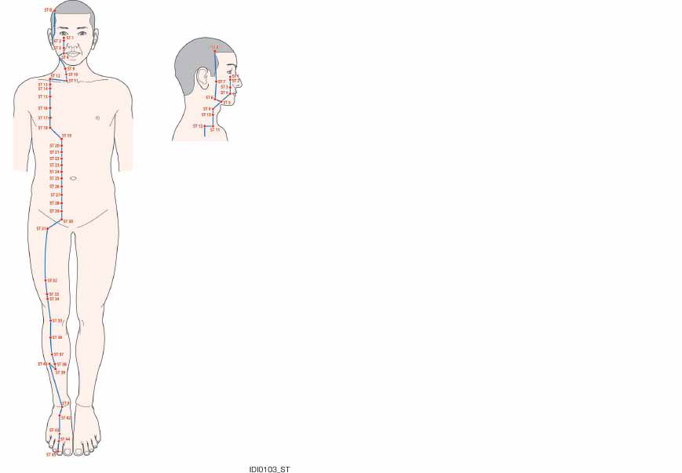
ST1 — צ'נג צ'י¶
שם סיני: (Cheng Qi) משמעות השם: "מקבל דמעות" — הנקודה מתחת לעין, מקום שבו דמעות נאספות קטגוריה מיוחדת: נקודת מפגש עם יאנג צ'יאו מאי ורן מאי
מיקום אנטומי
ישירות מתחת לאישון (Pupil), בין גלגל העין לגבול התחתון של ארובת העין (Infraorbital Ridge), על הגבול התחתון של ה-Orbicularis Oculi.
איך למצוא את הנקודה
- בקשו מהמטופל להביט ישר קדימה
- אתרו את האישון (Pupil)
- גששו את הגבול התחתון של ארובת העין (הקצה העצמי) — ישירות מתחת לאישון
- הנקודה על הגבול העצמי, בין העצם לגלגל העין
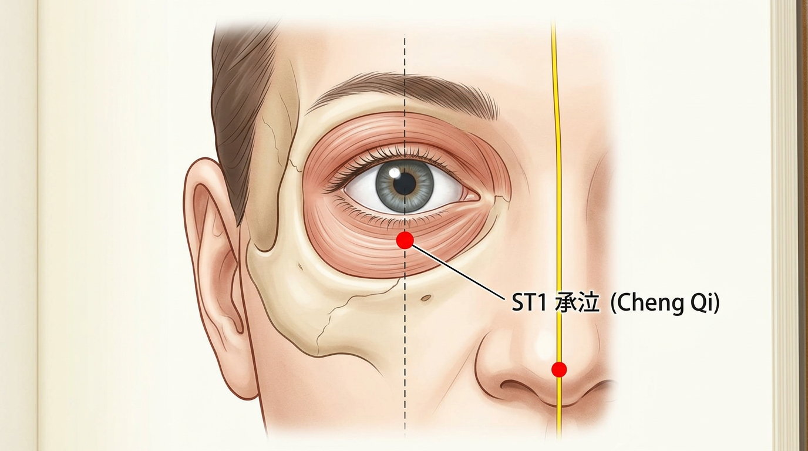
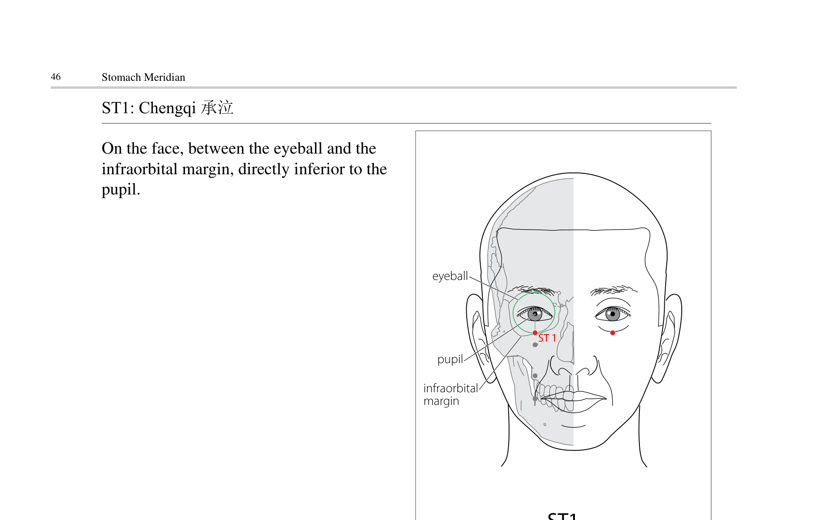
External References: AcuPoints
דיקור
- זווית: ניצבת, 90° לאורך דופן ארובת העין, דחפו את גלגל העין מעט כלפי מעלה
- עומק: 0.3-0.7 צון — לאט ובזהירות
- ⚠️ זהירות גבוהה: אין לדקור עמוק — סכנת פגיעה בעין. אין לסובב את המחט. לחצו לאחר השליפה למניעת המטומה
- תחושת דה-צ'י: כבדות, דמעות, תחושת לחץ מאחורי העין
פעולות והתוויות
- פעולות: מועיל לעיניים (נקודת מפתח לעיניים); מפזר רוח; עוצר דמעות
- התוויות: כל בעיות העיניים — אדמומיות, כאב, דמעות, ראייה מטושטשת, קוצר ראייה, גלאוקומה, שיתוק פנים (קושי לעצום עין)
- שילובים נפוצים: ST1 + GB20 + LR3 (בעיות עיניים); ST1 + BL1 + GB37 (ירידה בראייה)
ST2 — סי באי¶
שם סיני: (Si Bai) משמעות השם: "ארבעה לבנים" — מהנקודה ניתן לראות לבן לארבע כיוונים (שדה ראייה)
מיקום אנטומי
ישירות מתחת לאישון, בגומה של ה-Infraorbital Foramen, כ-1 צון מתחת ל-ST1.
איך למצוא את הנקודה
- בקשו מהמטופל להביט ישר קדימה
- מתחת לאישון, גששו את הגבול התחתון של ארובת העין
- ירדו כ-1 צון — גששו את הגומה (Infraorbital Foramen)
- לחצו — תחושת כאב/חשמל שמקרין ללחי ולשפה העליונה
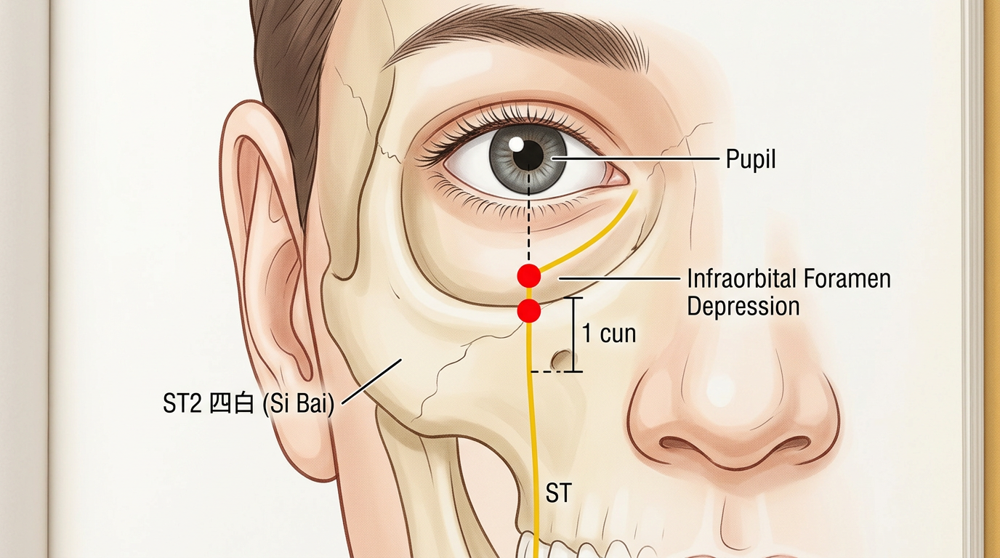
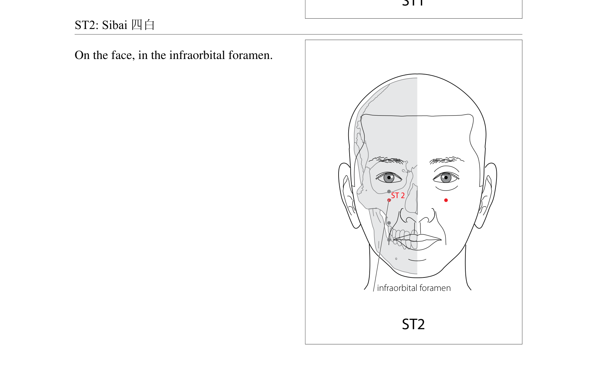
External References: AcuPoints
דיקור
- זווית: ניצבת, 90° (דקרו ישירות לתוך ה-Foramen)
- עומק: 0.2-0.4 צון
- ⚠️ זהירות: אין לדקור עמוק — עצב ה-Infraorbital נמצא בתעלה
- תחושת דה-צ'י: חשמל/נימול שמקרין ללחי ולשפה
פעולות והתוויות
- פעולות: מועיל לעיניים; מפזר רוח; מרגיע כאב פנים
- התוויות: כאב פנים, טיק בעפעף, אדמומיות בעיניים, ראייה מטושטשת, כאב שיניים, שיתוק פנים, סינוסיטיס
- שילובים נפוצים: ST2 + LI20 + Yintang (סינוסיטיס); ST2 + ST6 + ST7 (שיתוק פנים)
ST3 — ג'ו ליאו¶
שם סיני: (Ju Liao) משמעות השם: "שקע גדול" — הגומה מתחת לעצם הלחי
מיקום אנטומי
ישירות מתחת לאישון, ברמת הגבול התחתון של כנף האף (Ala Nasi), לטרלית לקפל הנזולביאלי.
איך למצוא את הנקודה
- ישירות מתחת לאישון (כמו ST1, ST2 — אותו קו אנכי)
- ברמת הגבול התחתון של הנחיר
- בנקודת החיתוך של קו אנכי מהאישון עם קו אופקי מתחתית הנחיר
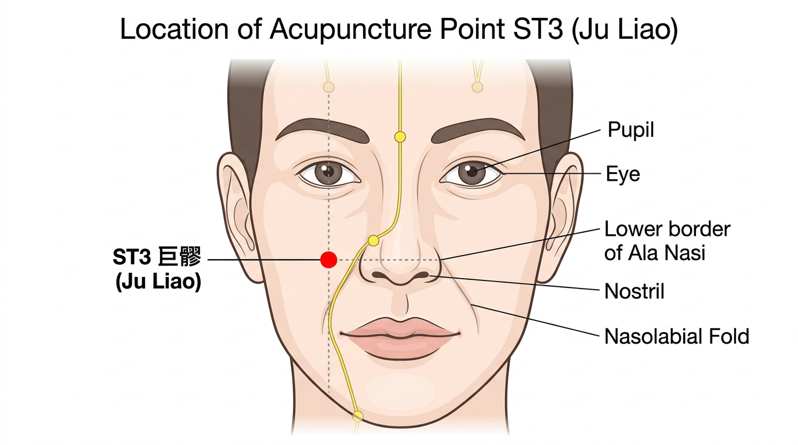
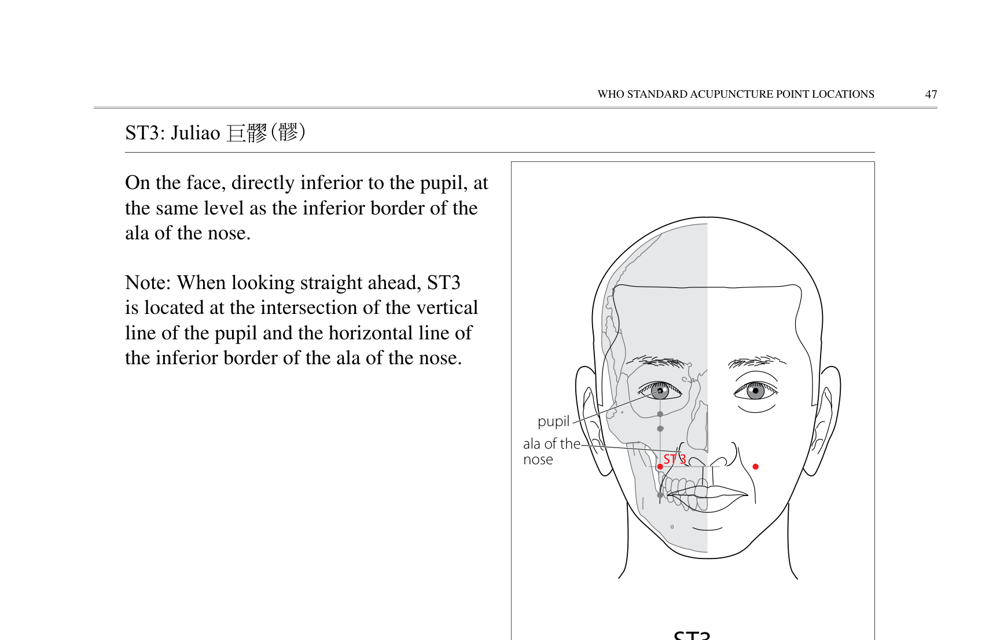
External References: AcuPoints
דיקור
- זווית: ניצבת או אלכסונית, 90-45°
- עומק: 0.3-0.5 צון
- תחושת דה-צ'י: נימול, כבדות
פעולות והתוויות
- פעולות: מפזר רוח; מפיג נפיחות; מרגיע כאב פנים
- התוויות: כאב פנים (נוירלגיה של הטריגמינוס), שיתוק פנים, נפיחות בשפתיים, כאב שיניים, דימום מהאף
- שילובים נפוצים: ST3 + ST6 + LI4 (כאב פנים, שיתוק)
ST4 — די צאנג¶
שם סיני: (Di Cang) משמעות השם: "מחסן הארץ" — ליד הפה, "מחסן" המזון; אדמה = קיבה/טחול
מיקום אנטומי
0.4 צון לטרלית לזווית הפה (Angle of the Mouth), ישירות מתחת לאישון.
איך למצוא את הנקודה
- בקשו מהמטופל להביט ישר קדימה
- אתרו את זווית (פינת) הפה
- מדדו 0.4 צון (כחצי ס"מ) הצידה מזווית הפה
- הנקודה על קו אנכי ישירות מתחת לאישון
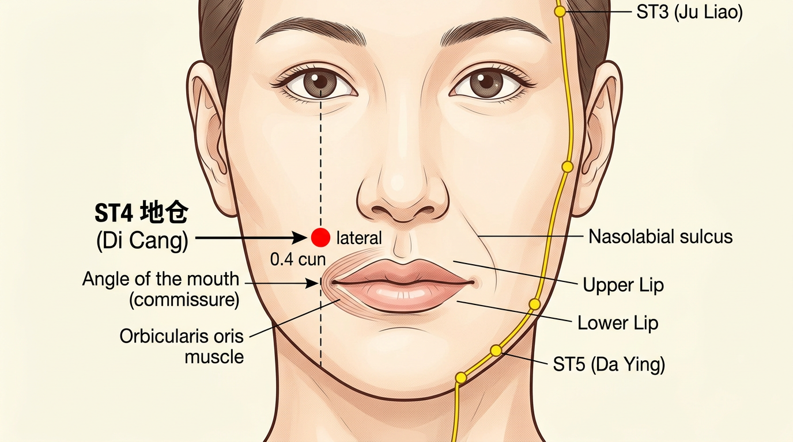
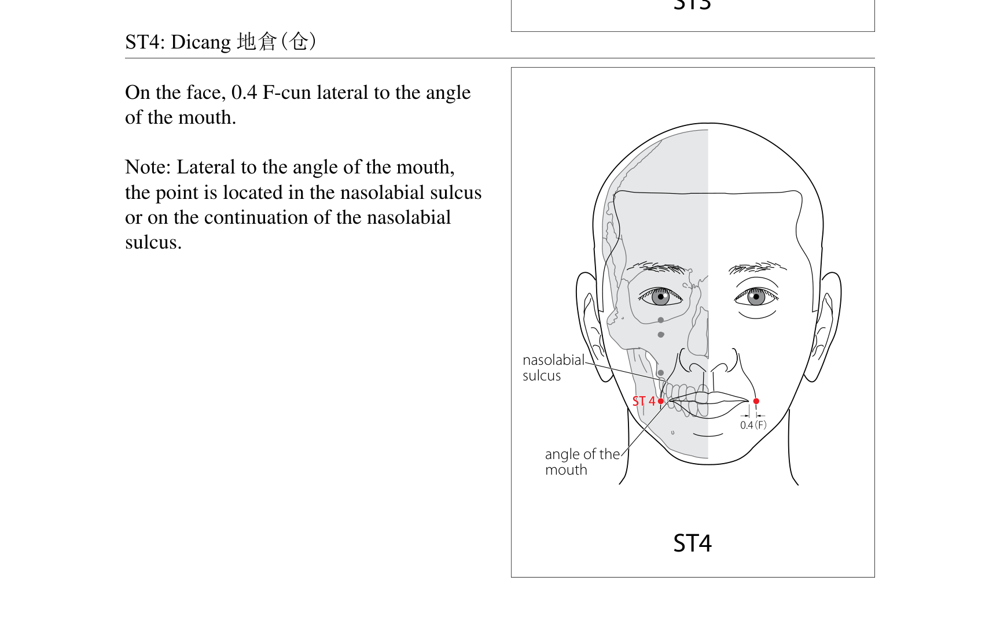
External References: AcuPoints
דיקור
- זווית: אלכסונית או מישורית לכיוון ST6
- עומק: 0.3-0.5 צון
- תחושת דה-צ'י: נימול מקומי, תחושה בשפתיים
פעולות והתוויות
- פעולות: מפזר רוח; מועיל לפנים ולפה; עוצר ריור
- התוויות: שיתוק פנים (נקודה חשובה), סטיית פה, ריור (Drooling), טיק בפנים, כאב פנים
- שילובים נפוצים: ST4 + ST6 + LI4 + GB14 (שיתוק פנים — פרוטוקול קלאסי)
ST5 — דה יינג¶
שם סיני: (Da Ying) משמעות השם: "קבלת פנים גדולה" — נקודה על עצם הלחי שבה "מקבלים" את הערוץ
מיקום אנטומי
קדמית לזווית המנדיבולה (Angle of Mandible), בגומה שנוצרת קדמית לשריר ה-Masseter, על עורק הפנים (Facial Artery).
איך למצוא את הנקודה
- גששו את זווית הלחי (הפינה האחורית-תחתונה של עצם המנדיבולה)
- הזיזו את האצבע כ-1.3 צון קדימה לאורך הגבול התחתון של המנדיבולה
- גששו את הגומה שנוצרת קדמית ל-Masseter — תרגישו דופק (עורק הפנים)
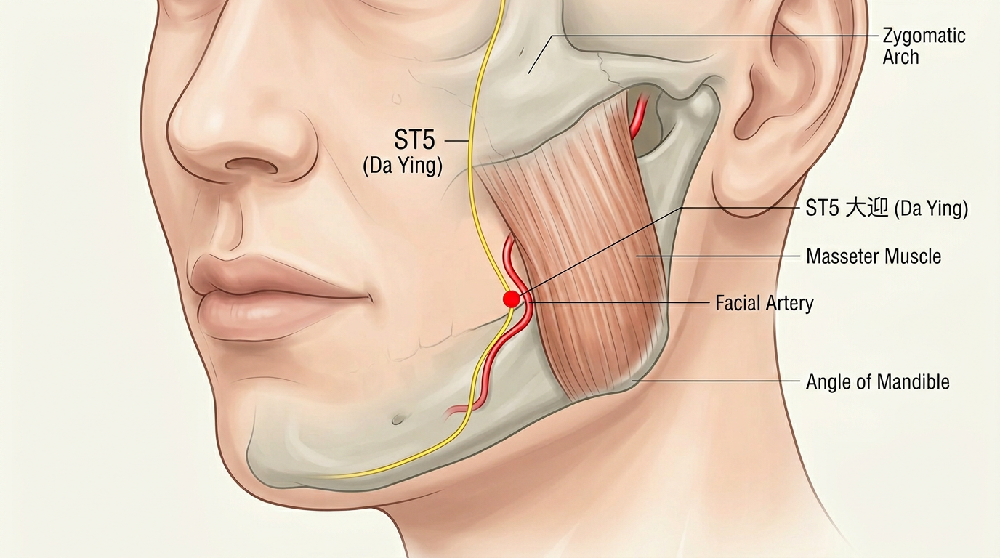
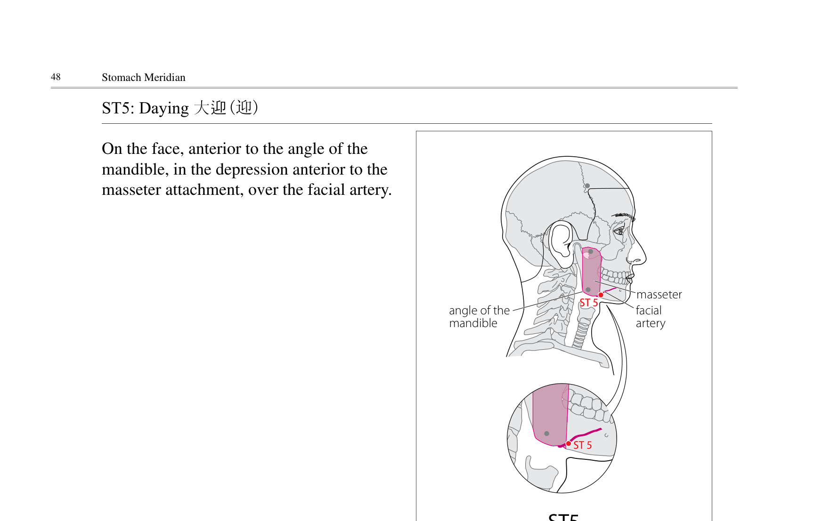
External References: AcuPoints
דיקור
- זווית: ניצבת, 90°
- עומק: 0.3-0.5 צון — הימנעו מהעורק
- תחושת דה-צ'י: נימול, כבדות
פעולות והתוויות
- פעולות: מפזר רוח; מפיג נפיחות; מרגיע כאב
- התוויות: כאב שיניים, נפיחות בלחי, שיתוק פנים, טריזמוס (נעילת לסת)
- שילובים נפוצים: ST5 + ST6 + ST7 (כאב לסת ושיניים)
ST6 — ג'יה צ'ה¶
שם סיני: (Jia Che) משמעות השם: "גלגל הלחי" — הנקודה על שריר הלעיסה, "גלגל" הלחי
מיקום אנטומי
רוחב אצבע אחד (1 צון) קדמית ומעל לזווית המנדיבולה, בבליטת שריר ה-Masseter שנוצרת כשמהדקים את השיניים.
איך למצוא את הנקודה
- בקשו מהמטופל להדק שיניים — שריר ה-Masseter יבלוט
- גששו את הבליטה — זו הנקודה
- כשהשיניים רפויות, נוצרת גומה קלה באותו מקום
- רוחב אצבע אחד קדמי ומעל לזווית הלחי
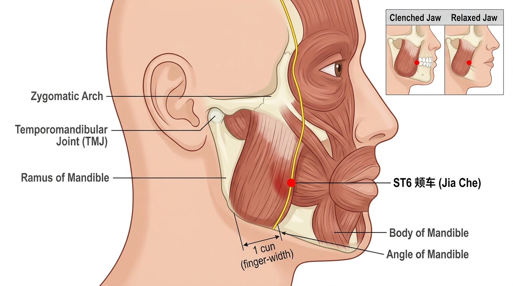
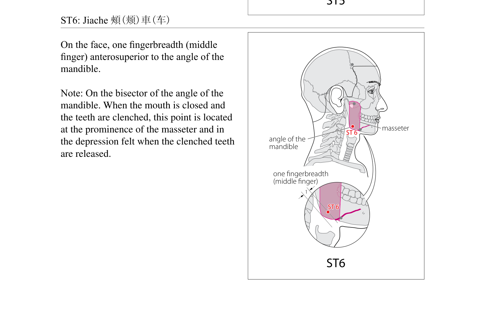
External References: AcuPoints
דיקור
- זווית: ניצבת, 90° או מישורית לכיוון ST4
- עומק: 0.3-0.5 צון
- תחושת דה-צ'י: כבדות בלחי, תחושה שמתפשטת לשיניים
פעולות והתוויות
- פעולות: מפזר רוח; מועיל ללחי ולשיניים; מרפה לסת
- התוויות: כאב שיניים (נקודה מרכזית), נעילת לסת (TMJ), שיתוק פנים, נפיחות בלחי, חריקת שיניים (Bruxism)
- שילובים נפוצים: ST6 + ST7 + LI4 (כאב שיניים); ST6 + ST4 (שיתוק פנים — דיקור מישורי מ-ST6 ל-ST4)
ST7 — שיה גואן¶
שם סיני: (Xia Guan) משמעות השם: "מפרק תחתון" — מתחת ל-Zygomatic Arch, ליד מפרק הלסת (TMJ) קטגוריה מיוחדת: נקודת מפגש עם ערוץ כיס המרה (GB)
מיקום אנטומי
בגומה שנוצרת בין ה-Zygomatic Arch (קשת הלחי) לבין ה-Mandibular Notch, קדמית ל-Condyloid Process של המנדיבולה. הגומה נעלמת כשהפה פתוח.
איך למצוא את הנקודה
- אתרו את ה-Zygomatic Arch — הקשת העצמית שמהאוזן ללחי
- גששו את הגומה שמתחת לקשת, קדמית לאוזן
- בקשו מהמטופל לפתוח את הפה — הגומה נעלמת (ה-Condyle עולה)
- בקשו מהמטופל לסגור — הגומה חוזרת
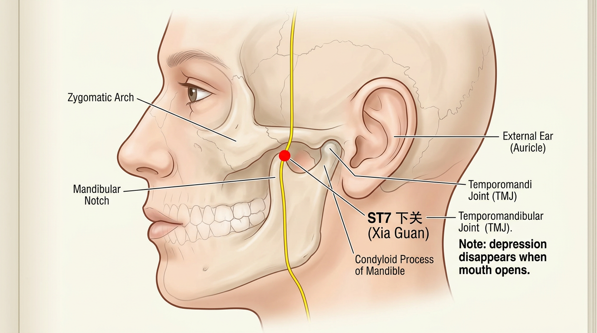
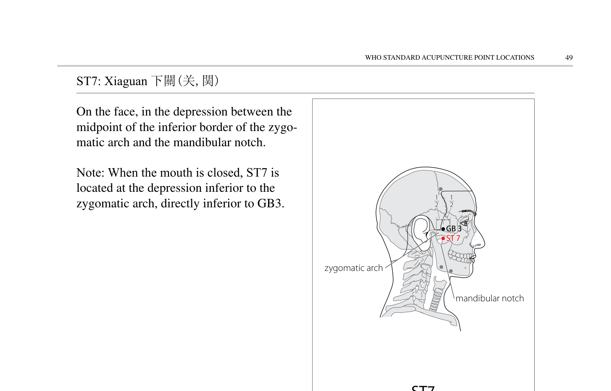
External References: AcuPoints
דיקור
- זווית: ניצבת, 90° (כשהפה סגור)
- עומק: 0.3-0.5 צון
- תחושת דה-צ'י: כבדות עמוקה, תחושה באוזן או בשיניים
פעולות והתוויות
- פעולות: מועיל לאוזן וללסת; מפזר רוח; מרגיע כאב
- התוויות: כאב מפרק הלסת (TMJ), נעילת לסת, כאב שיניים, טינטון, חירשות, כאב אוזניים
- שילובים נפוצים: ST7 + SI19 + TE21 (טינטון, חירשות); ST7 + ST6 (כאב TMJ)
ST8 — טאו ווי¶
שם סיני: (Tou Wei) משמעות השם: "פינת הראש" — בפינה הקדמית-צידית של קו השיער קטגוריה מיוחדת: נקודת מפגש עם ערוץ כיס המרה (GB) ויאנג ווי מאי
מיקום אנטומי
0.5 צון מעל קו השיער הקדמי, 4.5 צון לטרלית לקו האמצע, בפינת קו השיער (Hairline Corner).
איך למצוא את הנקודה
- אתרו את פינת קו השיער הקדמי — המקום שבו קו השיער מתעקל הצידה
- מדדו 0.5 צון מעל קו השיער באותה פינה
- הנקודה 4.5 צון לטרלית לקו האמצע של הראש
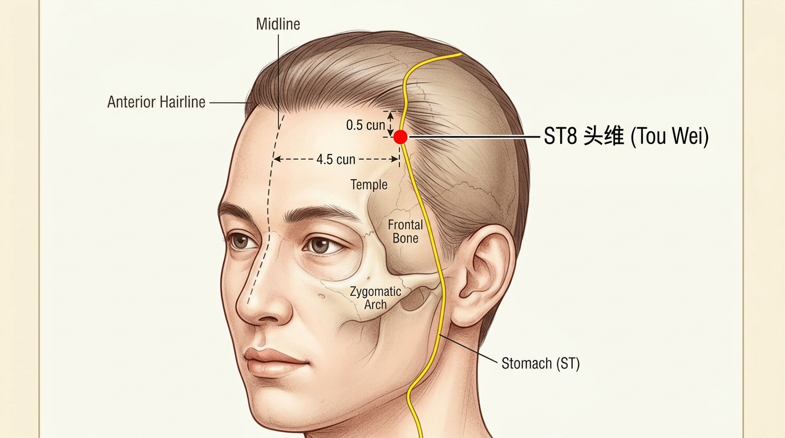
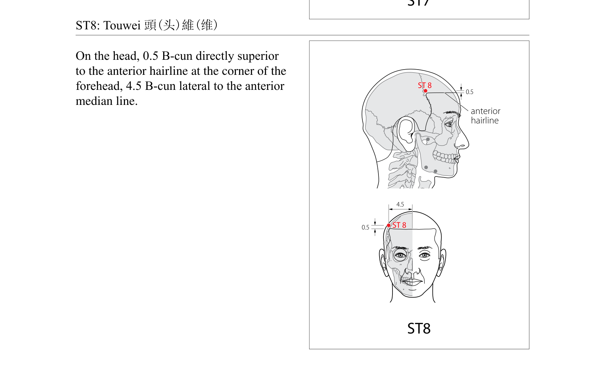
External References: AcuPoints
דיקור
- זווית: מישורית (Subcutaneous), 15-30° לכיוון אחורי
- עומק: 0.3-0.5 צון מישורית
- תחושת דה-צ'י: כבדות, נימול מקומי
פעולות והתוויות
- פעולות: מפזר רוח; מרגיע כאב ראש; מועיל לעיניים
- התוויות: כאב ראש (במיוחד קדמי וצידי), סחרחורת, כאב עיניים, דמעות, ראייה מטושטשת
- שילובים נפוצים: ST8 + GB20 + Taiyang (כאב ראש); ST8 + GB14 (כאב ראש קדמי)
3. נקודות הצוואר (ST9-ST12)¶
ST9 — רן יינג¶
שם סיני: (Ren Ying) משמעות השם: "קבלת אדם" — נקודה שבה ניתן לגשש את דופק ה"קבלה" קטגוריה מיוחדת: נקודה על עורק הקרוטיד; נקודת חלון השמיים
מיקום אנטומי
1.5 צון לטרלית לתפוח האדם (Adam's Apple), על הגבול הקדמי של שריר ה-SCM, ברמת ה-Thyroid Cartilage, על עורק הקרוטיד.
איך למצוא את הנקודה
- אתרו את תפוח האדם
- מדדו 1.5 צון הצידה
- גששו את דופק עורק הקרוטיד — הנקודה על העורק
- הנקודה על הגבול הקדמי של ה-SCM
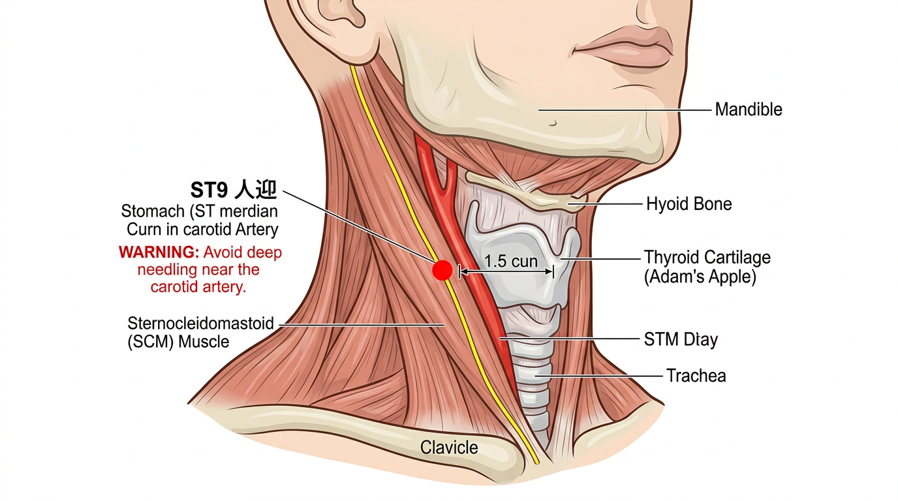
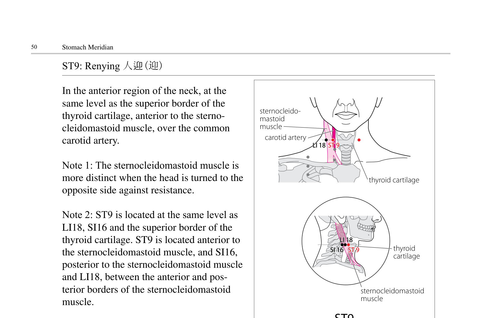
External References: AcuPoints
דיקור
- זווית: ניצבת, 90°
- עומק: 0.3-0.5 צון
- ⚠️ זהירות גבוהה: הימנעו מעורק הקרוטיד — גששו דופק, דקרו לטרלית לעורק. אין לדקור בשני הצדדים בו-זמנית
- תחושת דה-צ'י: כבדות, תחושת לחץ
פעולות והתוויות
- פעולות: מווסת צ'י ודם; מוריד לחץ דם; מועיל לגרון; מפזר ליחה
- התוויות: יתר לחץ דם (נקודה חשובה), גויטר, כאב גרון, אסתמה, סחרחורת
- שילובים נפוצים: ST9 + LI11 + LR3 (יתר לחץ דם); ST9 + LI18 (גויטר)
ST10 — שואי טו¶
שם סיני: (Shui Tu) משמעות השם: "בליטת המים" — ליד תפוח האדם שבולט כ"מים" (רוק) כשבולעים
מיקום אנטומי
על הגבול הקדמי של ה-SCM, באמצע הקו בין ST9 ל-ST11.
איך למצוא את הנקודה
- אתרו את ST9 (ברמת תפוח האדם) ואת ST11 (מעל הבריח)
- הנקודה באמצע ביניהם, על הגבול הקדמי של ה-SCM
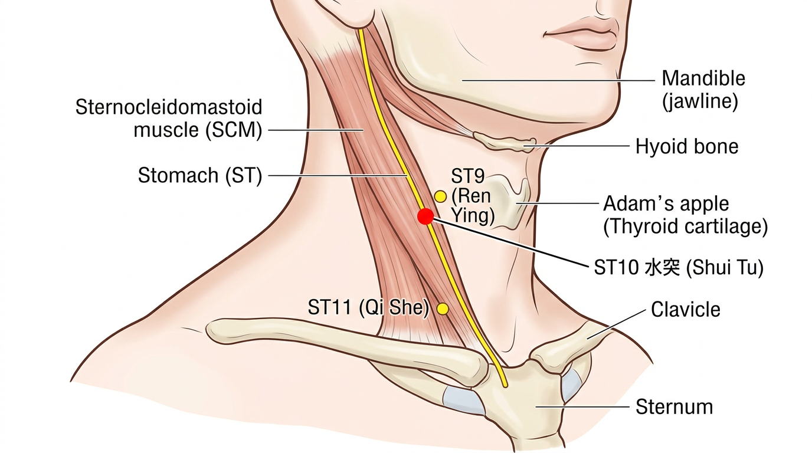
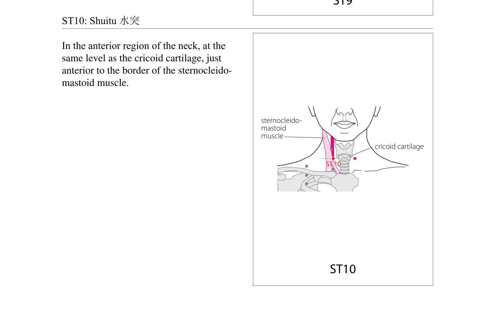
External References: AcuPoints
דיקור
- זווית: ניצבת, 90°
- עומק: 0.3-0.5 צון
- ⚠️ זהירות: הימנעו מעורק הקרוטיד
- תחושת דה-צ'י: כבדות מקומית
פעולות והתוויות
- פעולות: מווסת צ'י; מועיל לגרון; מרגיע שיעול ואסתמה
- התוויות: כאב גרון, שיעול, אסתמה, גויטר, שיהוקים
- שילובים נפוצים: ST10 + REN22 (שיעול, אסתמה)
ST11 — צ'י שה¶
שם סיני: (Qi She) משמעות השם: "בית הצ'י" — מקום שבו צ'י שוכן
מיקום אנטומי
על הגבול העליון של הבריח (Clavicle), בין ראשי ה-SCM (Sternal Head ו-Clavicular Head), ישירות מתחת ל-ST9.
איך למצוא את הנקודה
- אתרו את הבריח
- גששו את ה-SCM ואת שני ראשיו — הסטרנלי והקלביקולרי
- הנקודה בגומה שביניהם, על הגבול העליון של הבריח
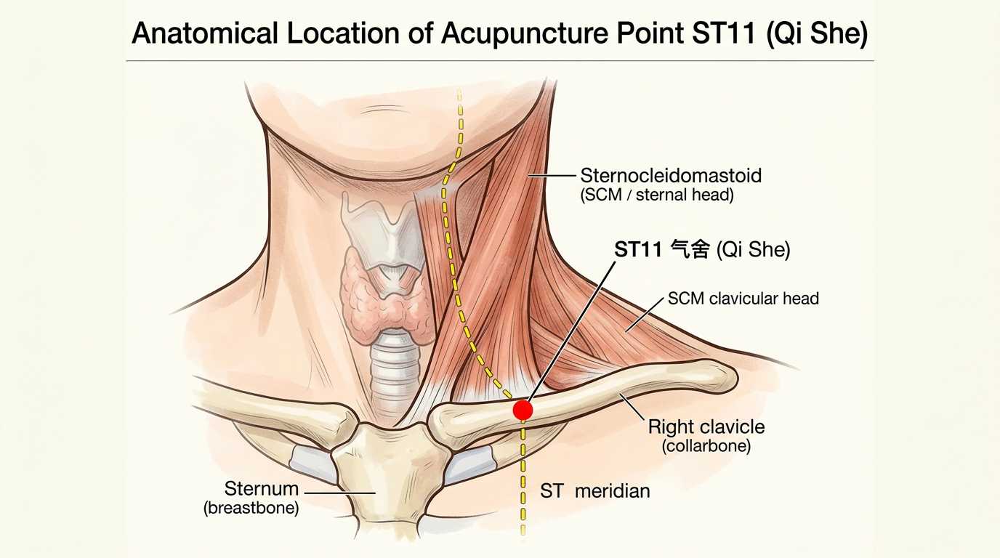
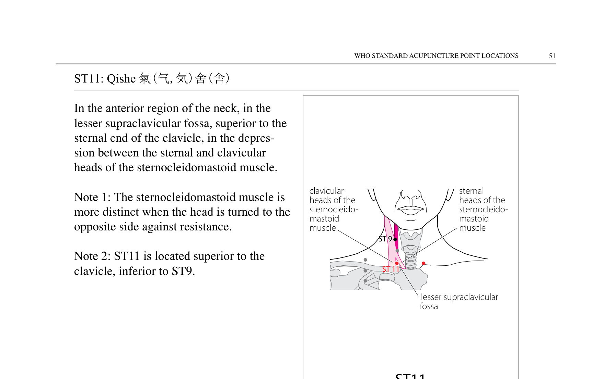
External References: AcuPoints
דיקור
- זווית: ניצבת, 90°
- עומק: 0.3-0.5 צון
- ⚠️ זהירות: אין לדקור עמוק — סכנת פנאומותורקס
- תחושת דה-צ'י: כבדות מקומית
פעולות והתוויות
- פעולות: מווסת צ'י; מועיל לגרון ולצוואר
- התוויות: כאב גרון, שיהוקים, נפיחות בצוואר, גויטר, נוקשות צוואר
- שילובים נפוצים: ST11 + ST12 + REN22 (בעיות גרון-צוואר)
ST12 — צ'יואה פן¶
שם סיני: (Que Pen) משמעות השם: "אגן שבור" — הגומה שמעל לבריח נראית כמו אגן
מיקום אנטומי
באמצע הגומה שמעל לבריח (Supraclavicular Fossa), 4 צון לטרלית לקו האמצע, על הקו הפטמתי.
איך למצוא את הנקודה
- אתרו את הגומה שמעל לבריח
- מדדו 4 צון לטרלית לקו האמצע (או על קו אנכי מהפטמה)
- הנקודה במרכז הגומה
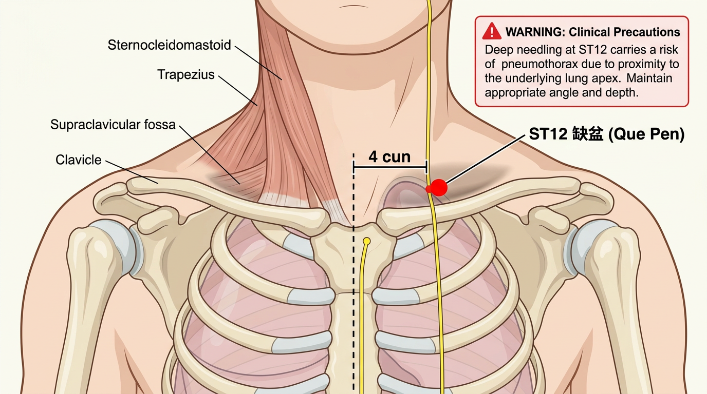
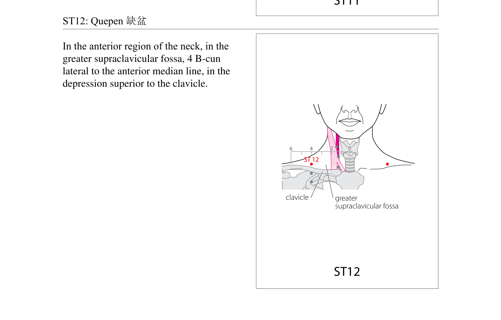
External References: AcuPoints
דיקור
- זווית: ניצבת, 90°
- עומק: 0.3-0.5 צון
- ⚠️ זהירות גבוהה: מתחת נמצאת קודקוד הריאה — סכנת פנאומותורקס. אין לדקור עמוק
- תחושת דה-צ'י: כבדות מקומית, תחושה שמתפשטת לכתף
פעולות והתוויות
- פעולות: מפנה חום מהריאות; מוריד צ'י מורד; מועיל לגרון
- התוויות: שיעול, אסתמה, כאב גרון, כאב כתף, נפיחות בצוואר
- שילובים נפוצים: ST12 + LU1 (גודש חזה עליון); ST12 + LI15 (כאב כתף)
4. נקודות החזה (ST13-ST18)¶
ST13 — צ'י הו¶
שם סיני: (Qi Hu) משמעות השם: "דלת הצ'י" — שער הכניסה של צ'י לחזה
מיקום אנטומי
על הגבול התחתון של הבריח, 4 צון לטרלית לקו האמצע, על הקו הפטמתי.
איך למצוא את הנקודה
- אתרו את הגבול התחתון של הבריח
- מדדו 4 צון לטרלית לקו האמצע
- הנקודה ישירות מתחת ל-ST12
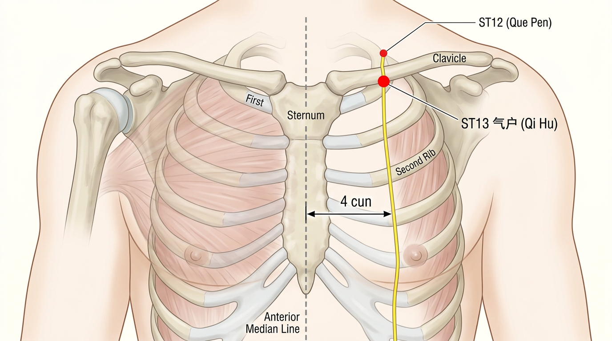
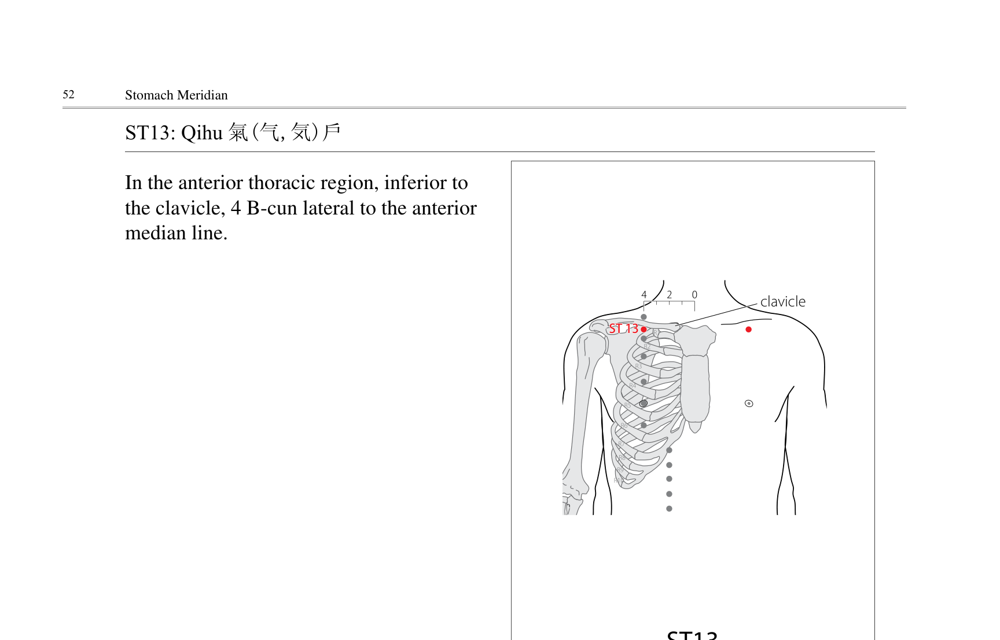
External References: AcuPoints
דיקור
- זווית: אלכסונית-לטרלית, 45°
- עומק: 0.3-0.5 צון
- ⚠️ זהירות: סכנת פנאומותורקס
- תחושת דה-צ'י: כבדות, גודש מקומי
פעולות והתוויות
- פעולות: מווסת צ'י בחזה; מרחיב חזה
- התוויות: שיעול, אסתמה, כאב בחזה, גודש בחזה, שיהוקים
- שילובים נפוצים: ST13 + REN17 (גודש חזה)
ST14-ST17 — נקודות החזה¶
ST14 — קו פאנג "חדר האוצר" — ברווח הבין-צלעי הראשון, 4 צון לטרלית. שיעול, כאב חזה.
ST15 — וו יי "גג הבית" — ברווח הבין-צלעי השני, 4 צון לטרלית. שיעול, כאב חזה, מסטיטיס.
ST16 — יינג צ'ואנג "חלון החזה" — ברווח הבין-צלעי השלישי, 4 צון לטרלית. כאב חזה, שיעול, נפיחות שד.
ST17 — רו ג'ונג "מרכז השד" — על הפטמה. אסור לדקור — נקודת ציון בלבד לצורך מדידה. הפטמה נמצאת ברווח הבין-צלעי הרביעי, 4 צון לטרלית.
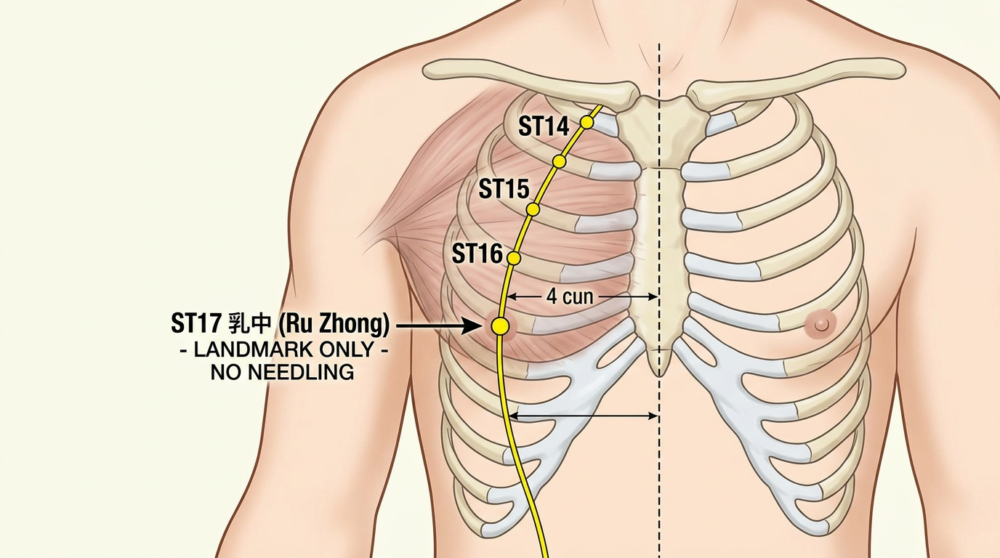
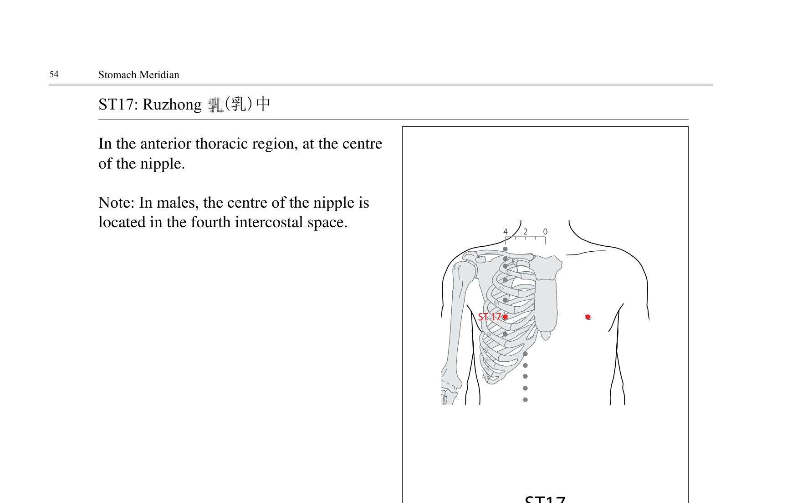
External References: AcuPoints
ST18 — רו גן¶
שם סיני: (Ru Gen) משמעות השם: "שורש השד" — בבסיס (שורש) השד
מיקום אנטומי
ברווח הבין-צלעי החמישי, 4 צון לטרלית לקו האמצע, ישירות מתחת לפטמה.
איך למצוא את הנקודה
- אתרו את הפטמה (ST17)
- ירדו רווח בין-צלעי אחד — לרווח החמישי
- הנקודה ישירות מתחת לפטמה, בבסיס השד
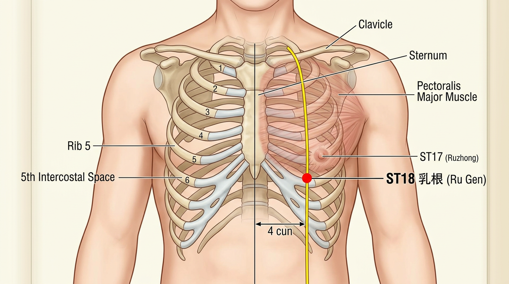
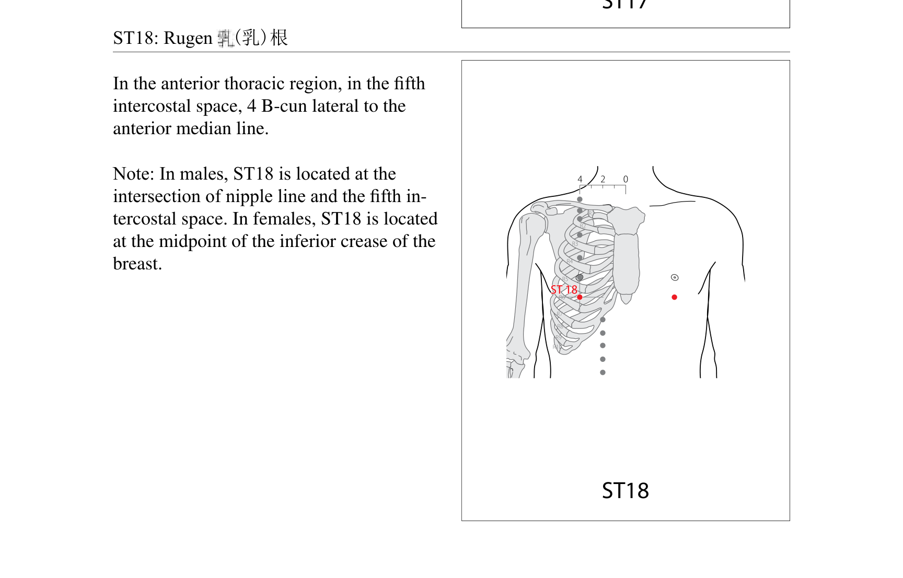
External References: AcuPoints
דיקור
- זווית: אלכסונית-לטרלית, 45°
- עומק: 0.3-0.5 צון
- ⚠️ זהירות: סכנת פנאומותורקס
- תחושת דה-צ'י: כבדות מקומית
פעולות והתוויות
- פעולות: מועיל לשד; מוריד צ'י; מפנה חום
- התוויות: מסטיטיס (דלקת שד), חוסר חלב (אימהות מניקות), כאב בחזה, שיעול, אסתמה
- שילובים נפוצים: ST18 + SI1 + REN17 (חוסר חלב); ST18 + LR14 (כאב צלעות)
5. נקודות הבטן (ST19-ST30)¶
ST19 — בו רונג¶
שם סיני: (Bu Rong) משמעות השם: "לא מכיל" — כאשר הקיבה מלאה ולא יכולה להכיל עוד
מיקום אנטומי
6 צון מעל הטבור, 2 צון לטרלית לקו האמצע. ברמת REN14.
איך למצוא את הנקודה
- אתרו את הטבור ואת מקום חיבור הצלעות (Xiphoid Process)
- REN14 נמצא 6 צון מעל הטבור על קו האמצע
- מדדו 2 צון לטרלית — זו ST19
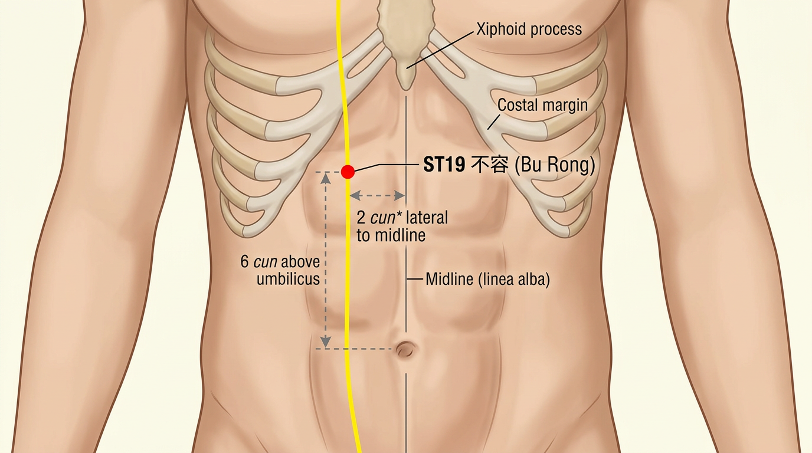
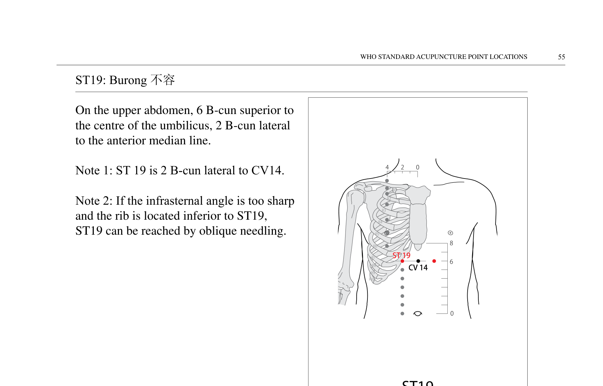
External References: AcuPoints
דיקור
- זווית: ניצבת, 90°
- עומק: 0.5-0.8 צון
- תחושת דה-צ'י: כבדות, גודש
פעולות והתוויות
- פעולות: מווסת צ'י של קיבה; מוריד צ'י מורד; מרגיע כאב
- התוויות: כאב קיבה, הקאות, חוסר תיאבון, נפיחות בטנית
- שילובים נפוצים: ST19 + REN12 + PC6 (כאב קיבה, הקאות)
ST20-ST24 — נקודות הבטן העליונה¶
ST20 — צ'נג מאן "מקבל מלאות" — 5 צון מעל הטבור, 2 צון לטרלית. כאב קיבה, הקאות.
ST21 — ליאנג מן "שער הגשר" — 4 צון מעל הטבור, 2 צון לטרלית. נקודה חשובה — כאב קיבה, חוסר תיאבון, שלשול. שילוב: ST21 + REN12 + ST36 (בעיות קיבה כרוניות).
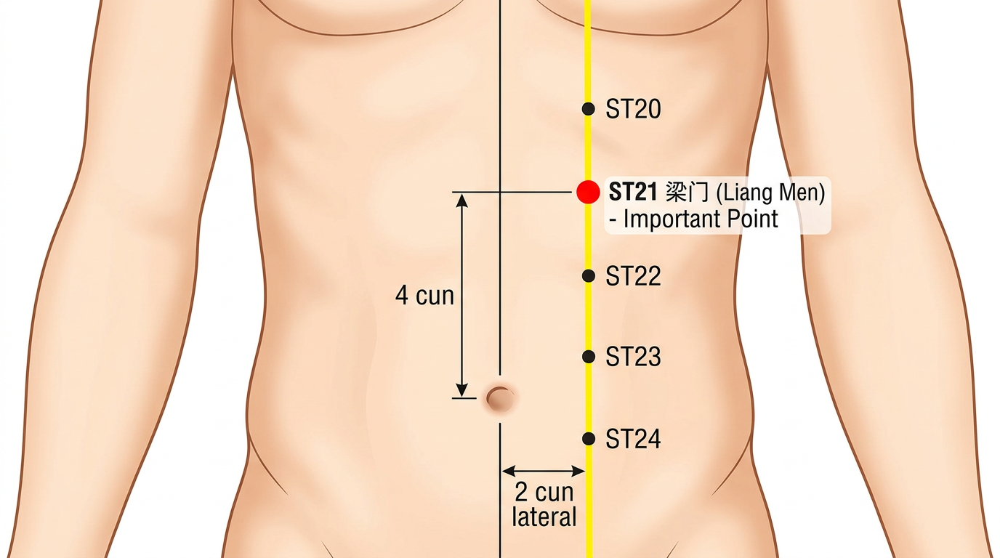
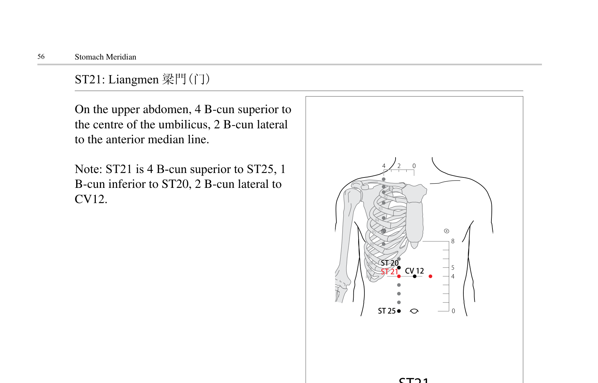
External References: AcuPoints
ST22 — גואן מן "שער הסגירה" — 3 צון מעל הטבור, 2 צון לטרלית. נפיחות בטנית, בצקות, שלשול.
ST23 — טאי יי "אחדות גדולה" — 2 צון מעל הטבור, 2 צון לטרלית. כאב קיבה, אי-שקט נפשי, מאניה.
ST24 — הואה רו מן "שער הבשר החלקלק" — 1 צון מעל הטבור, 2 צון לטרלית. הקאות, מאניה.
ST25 — טיאן שו¶
שם סיני: (Tian Shu) משמעות השם: "ציר השמיים" — הציר שבין ג'יאו עליון (שמיים) לג'יאו תחתון (ארץ) קטגוריה מיוחדת: נקודת מו קדמית (Mu Xue) של המעי הגס; נקודה מהחשובות בבטן
מיקום אנטומי
2 צון לטרלית לטבור, ברמת הטבור.
איך למצוא את הנקודה
- אתרו את הטבור
- מדדו 2 צון (רוחב 3 אצבעות) הצידה
- הנקודה ברמת הטבור בדיוק, 2 צון לטרלית
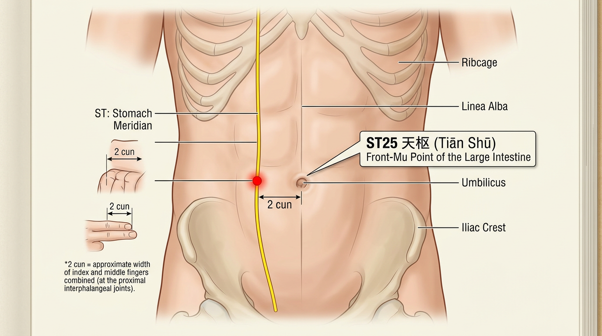
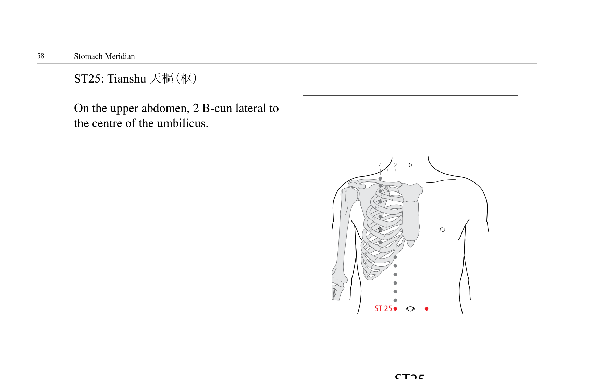
External References: AcuPoints
דיקור
- זווית: ניצבת, 90°
- עומק: 0.7-1.2 צון
- ⚠️ זהירות בהריון: אין לדקור עמוק בנשים בהריון
- תחושת דה-צ'י: כבדות, תחושת תנועה במעיים
פעולות והתוויות
- פעולות: מווסת מעיים (נקודת מפתח למעיים); מווסת צ'י ודם; מפיג רטיבות וחום; מפזר סטגנציה
- כנקודת מו של המעי הגס: אבחון וטיפול ישיר במעי הגס
- התוויות: עצירות, שלשול, דיזנטריה, כאב בטן, נפיחות בטנית, אי-סדירות מחזור, דלקת מעיים (IBS, IBD), בצקות
- שילובים נפוצים: ST25 + ST36 + ST37 (כל בעיות מעיים); ST25 + REN6 + SP6 (אי-סדירות מחזור); ST25 + SP15 + ST37 (עצירות)
ST26-ST28 — נקודות הבטן התחתונה¶
ST26 — וואי לינג "גבעה חיצונית" — 1 צון מתחת לטבור, 2 צון לטרלית. כאב בטן, דיסמנוריאה.
ST27 — דה ג'ו "גדול ענק" — 2 צון מתחת לטבור, 2 צון לטרלית. כאב בטן תחתון, עצירות, בעיות שתן, אין-פוטנציה (Impotence).
ST28 — שואי דאו "מסלול המים" — 3 צון מתחת לטבור, 2 צון לטרלית. נקודה חשובה למים — בצקות, עצירת שתן, כאב מחזור, כאב בטן תחתון. שילוב: ST28 + REN3 + SP9 (בעיות שתן, בצקות).
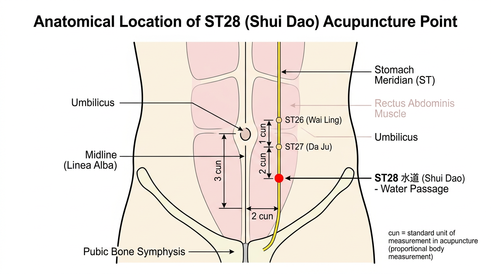
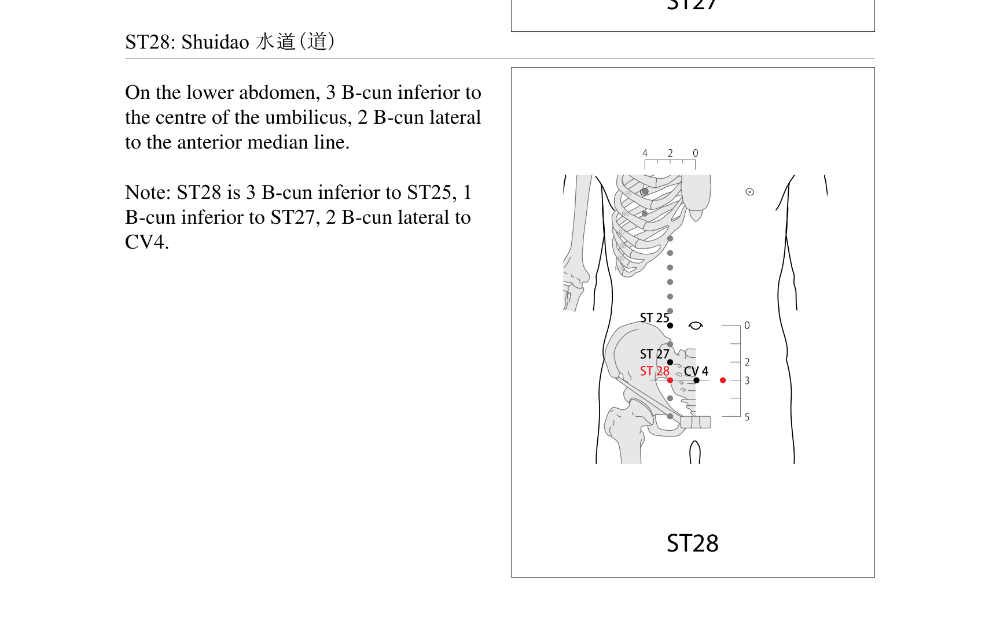
External References: AcuPoints
ST29 — גואי לאי¶
שם סיני: (Gui Lai) משמעות השם: "חזרה" — הצ'י חוזר; גם במשמעות של החזרת הרחם למקומו
מיקום אנטומי
4 צון מתחת לטבור, 2 צון לטרלית לקו האמצע.
איך למצוא את הנקודה
- מדדו 4 צון מתחת לטבור (ברמת REN3)
- מדדו 2 צון לטרלית
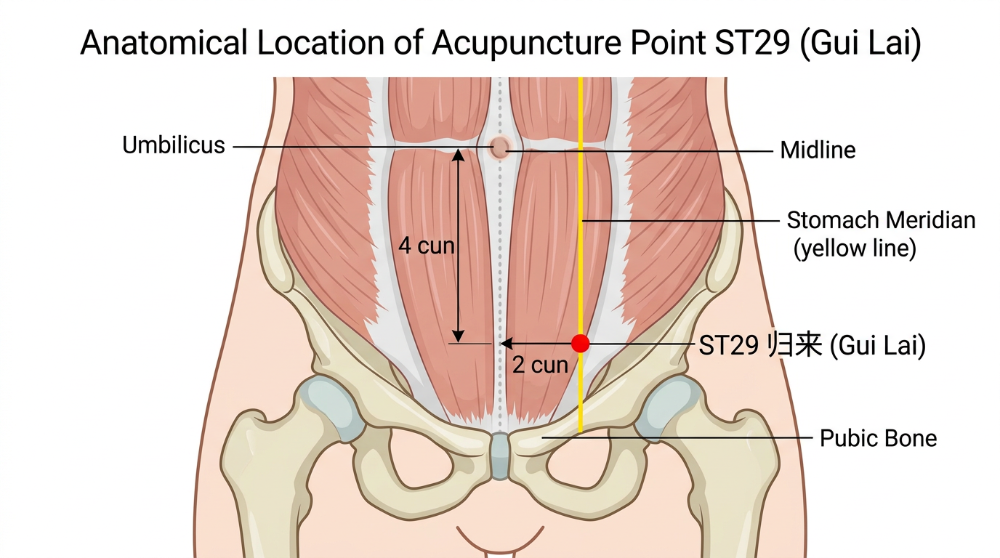
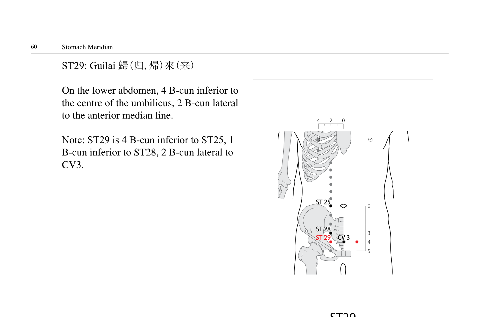
External References: AcuPoints
דיקור
- זווית: ניצבת, 90°
- עומק: 0.7-1.2 צון
- תחושת דה-צ'י: כבדות, תחושה שמתפשטת לאיברי המין
פעולות והתוויות
- פעולות: מווסת צ'י ודם בג'יאו תחתון; מחמם רחם; מועיל לאיברי מין
- התוויות: כאב מחזור, אי-סדירות מחזור, צניחת רחם, בקע מפשעתי (Hernia), אין-פוטנציה, כאב באשכים
- שילובים נפוצים: ST29 + REN4 + SP6 (בעיות גינקולוגיות)
ST30 — צ'י צ'ונג¶
שם סיני: (Qi Chong) משמעות השם: "פריצת צ'י" — מקום שבו צ'י פורצת החוצה קטגוריה מיוחדת: נקודת מפגש עם צ'ונג מאי
מיקום אנטומי
5 צון מתחת לטבור, 2 צון לטרלית לקו האמצע, על הגבול העליון של עצם ה-Pubis, מדיאלית לעורק הפמורלי.
איך למצוא את הנקודה
- אתרו את הגבול העליון של עצם הערווה (Pubic Bone)
- מדדו 2 צון לטרלית לקו האמצע
- גששו את דופק עורק הפמורלי — הנקודה מדיאלית לעורק
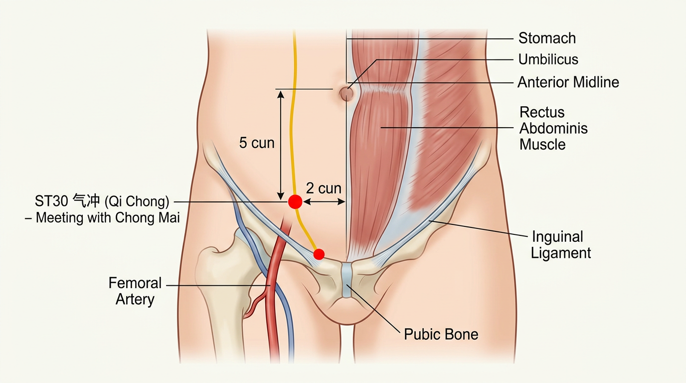
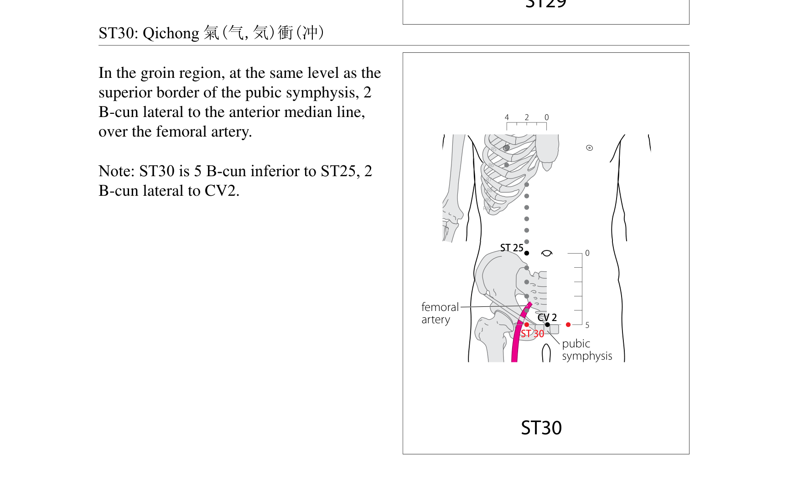
External References: AcuPoints
דיקור
- זווית: ניצבת, 90°
- עומק: 0.5-1.0 צון
- ⚠️ זהירות: הימנעו מעורק הפמורלי
- תחושת דה-צ'י: כבדות, חום מקומי
פעולות והתוויות
- פעולות: מווסת צ'י וצ'ונג מאי; מועיל לאיברי מין ולמערכת הרבייה
- התוויות: בקע מפשעתי, כאב באיברי מין, אי-פוריות, אי-סדירות מחזור, אין-פוטנציה
- שילובים נפוצים: ST30 + SP6 + REN4 (בעיות פוריות); ST30 + LR3 (בקע)
6. נקודות הירך (ST31-ST35)¶
ST31 — בי גואן¶
שם סיני: (Bi Guan) משמעות השם: "שער הירך" — בי = ירך; גואן = שער/מפרק
מיקום אנטומי
על הצד הקדמי של הירך, ישירות מתחת ל-ASIS (Anterior Superior Iliac Spine), ברמת הגבול התחתון של עצם ה-Pubis, בגומה שלטרלית לשריר ה-Sartorius.
איך למצוא את הנקודה
- בקשו מהמטופל לכופף מעט את הירך
- אתרו את ה-ASIS (הבליטה העצמית בחזית האגן)
- הנקודה ישירות מתחת ל-ASIS, בפגישת שרירי Sartorius ו-Tensor Fasciae Latae
- גששו את הגומה שנוצרת — לחצו
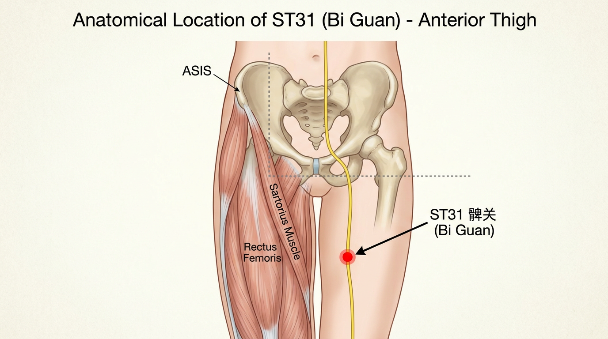
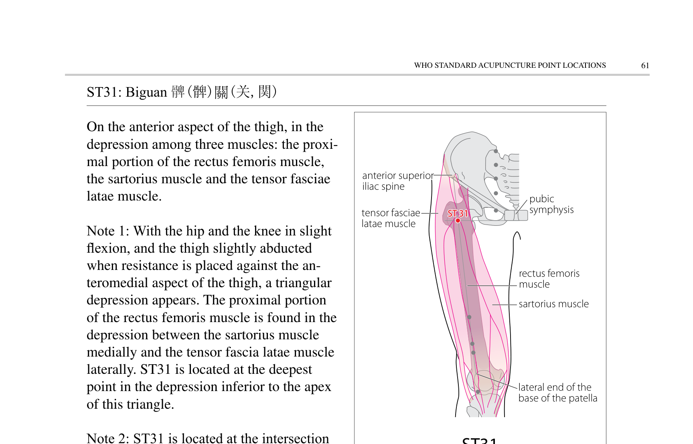
External References: AcuPoints
דיקור
- זווית: ניצבת, 90°
- עומק: 1.0-2.0 צון
- תחושת דה-צ'י: כבדות עמוקה, נימול שיורד לברך
פעולות והתוויות
- פעולות: מחזק רגליים; מפזר רוח-רטיבות; מרגיע כאב
- התוויות: כאב ירך, נימול ברגל, שיתוק גפה תחתונה, כאב מותני
- שילובים נפוצים: ST31 + ST32 + GB30 (כאב ירך)
ST32 — פו טו¶
שם סיני: (Fu Tu) משמעות השם: "ארנב רובץ" — בליטת שריר הקוואדריצפס נראית כארנב רובץ
מיקום אנטומי
6 צון מעל הגבול העליון-לטרלי של הפטלה (Patella), על הקו המחבר בין ASIS לגבול הלטרלי של הפטלה, על שריר ה-Rectus Femoris.
איך למצוא את הנקודה
- בקשו מהמטופל לשכב על הגב עם רגל ישרה
- אתרו את הגבול העליון-לטרלי של הפיקה (Patella)
- מדדו 6 צון מעלה
- הנקודה על בליטת שריר ה-Rectus Femoris — בקשו מהמטופל לכווץ את השריר
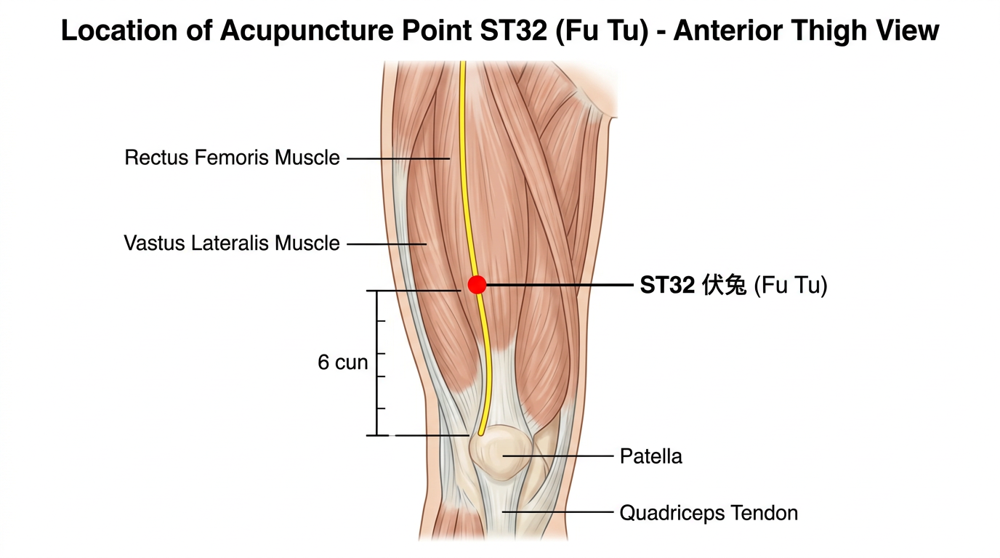
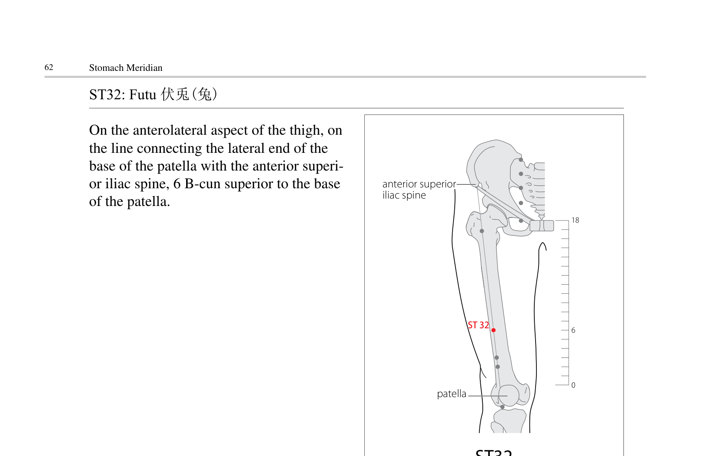
External References: AcuPoints
דיקור
- זווית: ניצבת, 90°
- עומק: 1.0-2.0 צון
- תחושת דה-צ'י: כבדות עמוקה
פעולות והתוויות
- פעולות: מחזק רגליים; מפזר רוח-קור; מרגיע כאב
- התוויות: כאב ברך וירך, נימול ברגל, שיתוק, בקע, כאב מותני
- שילובים נפוצים: ST32 + ST34 + ST36 (כאב ברך-ירך)
ST33 — ין שי¶
שם סיני: (Yin Shi) משמעות השם: "שוק הין" — אזור שבו צ'י ין מתאסף
מיקום אנטומי
3 צון מעל הגבול העליון-לטרלי של הפטלה, על שריר ה-Rectus Femoris.
איך למצוא את הנקודה
- אתרו את הגבול העליון-לטרלי של הפטלה
- מדדו 3 צון מעלה
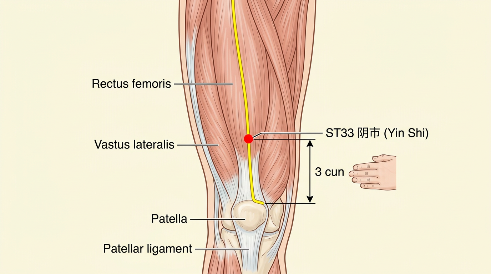
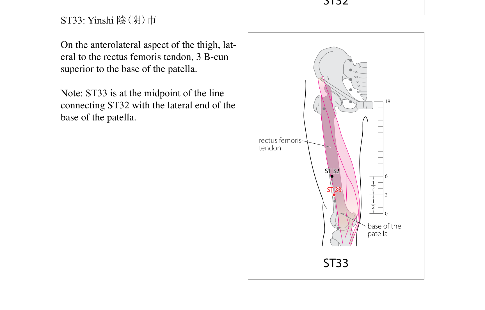
External References: AcuPoints
דיקור
- זווית: ניצבת, 90°
- עומק: 1.0-1.5 צון
- תחושת דה-צ'י: כבדות מקומית
פעולות והתוויות
- פעולות: מפזר קור-רטיבות; מחמם ערוץ; מרגיע כאב ברך
- התוויות: כאב ברך, קרירות ברגליים, נימול, בקע, כאב בטן תחתון
- שילובים נפוצים: ST33 + ST34 (כאב ירך-ברך)
ST34 — ליאנג צ'יו¶
שם סיני: (Liang Qiu) משמעות השם: "גבעת הגשר" — בליטת השריר כמו גבעה ליד "גשר" הברך קטגוריה מיוחדת: נקודת שי-צלע (Xi Xue) — נקודת חירום/כאב חריף של הערוץ
מיקום אנטומי
2 צון מעל הגבול העליון-לטרלי של הפטלה, בין שריר ה-Rectus Femoris לבין ה-Vastus Lateralis.
איך למצוא את הנקודה
- אתרו את הגבול העליון-לטרלי של הפטלה
- מדדו 2 צון מעלה
- הנקודה בין שני השרירים — גששו את השקע ביניהם
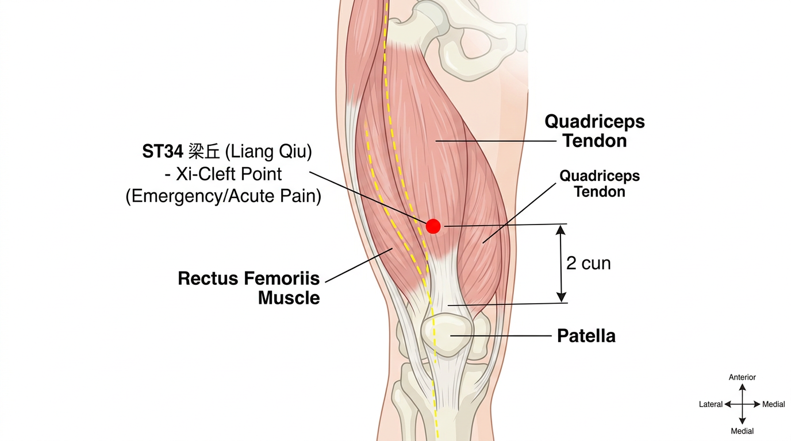
External References: AcuPoints
דיקור
- זווית: ניצבת, 90°
- עומק: 0.7-1.2 צון
- תחושת דה-צ'י: כבדות, כאב עמוק
פעולות והתוויות
- פעולות: מווסת צ'י קיבה; מרגיע כאב חריף (נקודת חירום); מועיל לברך
- כנקודת שי: משמשת למצבים חריפים של ערוץ הקיבה
- התוויות: כאב קיבה חריף (נקודה ראשונה), כאב ברך חריף, נפיחות ברך, מסטיטיס חריפה, שלשול חריף
- שילובים נפוצים: ST34 + REN12 + PC6 (כאב קיבה חריף); ST34 + ST35 + Xiyan (כאב ברך)
ST35 — דו בי¶
שם סיני: (Du Bi) משמעות השם: "אף העגל" — הגומה מתחת לפיקה נראית כמו נחיר של עגל קטגוריה מיוחדת: נקודה מרכזית לברך
מיקום אנטומי
כאשר הברך מכופפת, בגומה (Depression) הלטרלית שמתחת לפטלה, לטרלית לליגמנט הפטלרי (Patellar Ligament).
איך למצוא את הנקודה
- בקשו מהמטופל לכופף את הברך ב-90° (ישיבה)
- אתרו את הליגמנט הפטלרי — הרצועה הקשיחה שמתחת לפיקה
- שתי גומות נוצרות משני צדי הליגמנט
- ST35 בגומה הלטרלית (חיצונית) — "העין הלטרלית של הברך"
- (הגומה המדיאלית היא נקודת Extra: Medial Xiyan)
External References: AcuPoints
דיקור
- זווית: אלכסונית לכיוון מרכז הברך, 45° כלפי מדיאלי ואחורי
- עומק: 0.5-1.0 צון
- תחושת דה-צ'י: כבדות בברך, לעתים תחושת חום
פעולות והתוויות
- פעולות: מפזר רוח-רטיבות; מועיל לברך (הנקודה העיקרית לברך)
- התוויות: כאב ברך (כל סוג), נפיחות ברך, נוקשות ברך, קושי בהליכה
- שילובים נפוצים: ST35 + Medial Xiyan (Extra) = "עיני הברך" — שילוב קלאסי; ST35 + ST36 + SP9 + GB34 (ברך מקיף)
7. נקודות השוקה (ST36-ST40)¶
ST36 — צו סאן לי¶
שם סיני: (Zu San Li) משמעות השם: "שלושה לי של הרגל" — 3 צון מתחת לברך; "שלוש נסיעות" — אמרה סינית: "מי שדוקר צו סאן לי יכול ללכת שלושה לי נוספים" קטגוריה מיוחדת: נקודת הה-ים (He Xue) — אלמנט אדמה (Tu); אחת מ-4 נקודות הפיקוד; נקודת הה-ים התחתונה של הקיבה; נקודת "ים של מזון"
מיקום אנטומי
3 צון מתחת ל-ST35 (דו בי), רוחב אצבע אחד (1 צון) לטרלית לקצה הקדמי של עצם השוקה (Tibial Crest).
איך למצוא את הנקודה
- בקשו מהמטופל לשבת עם ברך מכופפת ב-90°
- אתרו את ST35 (הגומה הלטרלית מתחת לפיקה)
- מדדו 3 צון (רוחב 4 אצבעות) ישירות מטה
- הנקודה 1 צון (רוחב אצבע) לטרלית לקצה הקדמי של עצם השוקה (Tibia)
- הנקודה בשריר ה-Tibialis Anterior — לחצו ותרגישו את השריר
- שיטה חלופית: הניחו כף יד על הפיקה, אצבעות למטה — קצה האצבע הרביעית (Ring Finger) נוגע ב-ST36
External References: AcuPoints
דיקור
- זווית: ניצבת, 90°
- עומק: 1.0-2.0 צון
- תחושת דה-צ'י: כבדות עמוקה, נימול שיורד לכף הרגל, לעתים תחושת חשמל
פעולות והתוויות
- פעולות: מחזק צ'י של קיבה וטחול (הנקודה החשובה ביותר לחיזוק עיכול); מחזק צ'י ודם כללי; מזין ין; מחמם יאנג; מחזק ווי צ'י (חיסון); מגרש רוח-רטיבות; מרגיע כאב; מרגיע שן (רוח); מווסת צ'י ודם; מוריד צ'י מורד
- כנקודת פיקוד: "הבטן — צו סאן לי שומרת"
- התוויות: כאב קיבה, בחילה, הקאות, שלשול, עצירות, נפיחות בטנית, חולשה כללית, עייפות כרונית, חום, סחרחורת, דיכאון, חרדה, כאב ברך, שיתוק רגל, חיזוק חיסוני, אריכות ימים (בשימוש מוקסה), מצבים כרוניים רבים
- שילובים נפוצים: ST36 + SP6 (חיזוק צ'י ודם — "זוג הזהב"); ST36 + REN12 + SP3 (חיזוק קיבה-טחול); ST36 + LI4 + LU7 (חיזוק חיסוני); ST36 + REN4 + REN6 (חיזוק כללי)
ST37 — שאנג ג'ו שו¶
שם סיני: (Shang Ju Xu) משמעות השם: "ריקנות עליונה גדולה" — הגומה שבין עצם השוקה לשריר קטגוריה מיוחדת: נקודת הה-ים התחתונה (Xia He Xue) של המעי הגס
מיקום אנטומי
6 צון מתחת ל-ST35, 1 צון לטרלית לקצה הקדמי של עצם השוקה. 3 צון מתחת ל-ST36.
איך למצוא את הנקודה
- אתרו את ST36
- מדדו 3 צון ישירות מטה — זו ST37
- הנקודה על אותו קו — 1 צון לטרלית לשוקה, על שריר ה-Tibialis Anterior
External References: AcuPoints
דיקור
- זווית: ניצבת, 90°
- עומק: 1.0-1.5 צון
- תחושת דה-צ'י: כבדות, נימול
פעולות והתוויות
- פעולות: מווסת מעי גס; מפנה חום-רטיבות מהמעיים; מרגיע כאב
- כנקודת הה-ים של המעי הגס: הנקודה היעילה ביותר לטיפול ישיר במעי הגס
- התוויות: דיזנטריה, שלשול, עצירות, כאב בטן, אפנדיציטיס, שיתוק רגל
- שילובים נפוצים: ST37 + ST25 (כל בעיות מעי גס); ST37 + ST39 + REN6 (שלשול כרוני)
ST38 — טיאו קאו¶
שם סיני: (Tiao Kou) משמעות השם: "פתח צר" — פתח צר בין עצמות השוקה
מיקום אנטומי
8 צון מתחת ל-ST35, 1 צון לטרלית לשוקה, באמצע הקו בין ST35 ל-ST41.
איך למצוא את הנקודה
- אתרו את ST35 (מתחת לפיקה) ואת ST41 (קפל הקרסול)
- מצאו את נקודת האמצע — 8 צון מכל צד
- 2 צון מתחת ל-ST37
External References: AcuPoints
דיקור
- זווית: ניצבת, 90°
- עומק: 1.0-1.5 צון
- טכניקה מיוחדת לכתף: דקרו ניצבת ובו-זמנית בקשו מהמטופל לנוע את הכתף
- תחושת דה-צ'י: כבדות, נימול
פעולות והתוויות
- פעולות: מועיל לכתף (נקודה מרוחקת לכאב כתף!); מפזר קור-רטיבות; מרפה שרירים
- התוויות: כאב כתף וקפיאת כתף (שימוש מרוחק אמפירי), כאב ברגל, נימול, עוויתות שוקה, חולשת ברך
- שילובים נפוצים: ST38 + LI15 + TE14 (כאב כתף — ST38 כנקודה מרוחקת)
ST39 — שיה ג'ו שו¶
שם סיני: (Xia Ju Xu) משמעות השם: "ריקנות תחתונה גדולה" קטגוריה מיוחדת: נקודת הה-ים התחתונה של המעי הדק
מיקום אנטומי
9 צון מתחת ל-ST35, 1 צון לטרלית לשוקה. 1 צון מתחת ל-ST38.
איך למצוא את הנקודה
- אתרו את ST38
- מדדו 1 צון מטה
External References: AcuPoints
דיקור
- זווית: ניצבת, 90°
- עומק: 1.0-1.5 צון
- תחושת דה-צ'י: כבדות, נימול
פעולות והתוויות
- פעולות: מווסת מעי דק; מפנה חום-רטיבות; מרגיע כאב
- כנקודת הה-ים של המעי הדק: טיפול ישיר בבעיות מעי דק
- התוויות: כאב בטן תחתון, שלשול, דיזנטריה, מסטיטיס, כאב ברגל
- שילובים נפוצים: ST39 + ST37 + ST25 (בעיות מעיים); ST39 + REN4 (כאב בטן תחתון)
ST40 — פנג לונג¶
שם סיני: (Feng Long) משמעות השם: "שפע ושגשוג" — הנקודה על בליטה שרירית שופעת קטגוריה מיוחדת: נקודת לואו מחברת (Luo Xue); הנקודה המרכזית לטיפול בליחה (Tan)
מיקום אנטומי
8 צון מעל קודקוד הקרסול החיצוני (Lateral Malleolus), 2 צון לטרלית ל-ST38, על הגבול הלטרלי של שריר ה-Tibialis Anterior (או בין Tibialis Anterior ל-Extensor Digitorum Longus).
איך למצוא את הנקודה
- אתרו את קודקוד הקרסול החיצוני
- מדדו 8 צון מעלה (נקודת האמצע בין הקרסול לברך)
- הנקודה 2 צון לטרלית לקצה השוקה — צעד אחד לטרלית מקו ST38
- על בליטה שרירית ברורה
External References: AcuPoints
דיקור
- זווית: ניצבת, 90°
- עומק: 1.0-1.5 צון
- תחושת דה-צ'י: כבדות, נימול שמתפשט מטה
פעולות והתוויות
- פעולות: הופך ליחה (הנקודה מספר 1 לטיפול בליחה); מפנה חום; מרגיע שן (רוח); פותח חזה; מפזר רטיבות
- כנקודת לואו: מחברת לערוץ הטחול (SP)
- התוויות: שיעול עם ליחה (כל סוג — חמה, קרה, יבשה, רטובה), סחרחורת מליחה, ליחה שחוסמת את הלב (בלבול, מאניה), נפיחות בטנית, בחילה, שיהוקים, גודש בחזה, כאב ראש מליחה
- שילובים נפוצים: ST40 + SP3 (ליחה מחסר טחול); ST40 + LU5 + REN17 (ליחה בריאות); ST40 + PC5 + HT7 (ליחה שחוסמת לב — מאניה); ST40 + GV20 + SP6 (סחרחורת מליחה)
8. נקודות הקרסול וכף הרגל (ST41-ST45)¶
ST41 — ג'יה שי¶
שם סיני: (Jie Xi) משמעות השם: "פיצול הנחל" — הנקודה בקפל שבין השוקה לכף הרגל קטגוריה מיוחדת: נקודת ג'ינג-נהר (Jing Xue) — אלמנט אש (Huo)
מיקום אנטומי
בקפל הקדמי של מפרק הקרסול, באמצע, בין גידי ה-Extensor Hallucis Longus ו-Extensor Digitorum Longus.
איך למצוא את הנקודה
- בקשו מהמטופל לכופף את כף הרגל כלפי מעלה (Dorsiflexion)
- שני גידים יבלטו בחזית הקרסול
- הנקודה בגומה שבין שני הגידים, באמצע קפל הקרסול הקדמי
- ברמת קודקוד הקרסוליים (Malleoli)
External References: AcuPoints
דיקור
- זווית: ניצבת, 90°
- עומק: 0.3-0.5 צון
- תחושת דה-צ'י: נימול, כאב מקומי
פעולות והתוויות
- פעולות: מפנה חום מקיבה וממעיים; מרגיע שן (רוח); מרגיע כאב קרסול; מועיל לראש
- התוויות: כאב ראש, סחרחורת, מאניה, כאב קרסול, נפיחות קרסול, עצירות מחום, כאב פנים
- שילובים נפוצים: ST41 + GB40 (כאב קרסול); ST41 + GV20 + LR3 (סחרחורת, כאב ראש)
ST42 — צ'ונג יאנג¶
שם סיני: (Chong Yang) משמעות השם: "פורץ היאנג" — מקום שבו דופק יאנג (של הקיבה) מורגש קטגוריה מיוחדת: נקודת יואן-מקור (Yuan Xue)
מיקום אנטומי
על גב הרגל, בנקודה הגבוהה ביותר של גב הרגל, 1.5 צון דיסטלית ל-ST41, בגומה שבין עצמות המטטרסל השנייה והשלישית ועצמות ה-Cuneiform.
איך למצוא את הנקודה
- גששו את הנקודה הגבוהה ביותר של גב הרגל
- גששו את דופק עורק ה-Dorsalis Pedis — הנקודה לטרלית לעורק
- 1.5 צון דיסטלית ל-ST41
External References: AcuPoints
דיקור
- זווית: ניצבת, 90°
- עומק: 0.2-0.3 צון
- ⚠️ זהירות: הימנעו מעורק ה-Dorsalis Pedis
- תחושת דה-צ'י: נימול מקומי
פעולות והתוויות
- פעולות: מחזק צ'י קיבה (כנקודת יואן); מרגיע שן; מפנה חום; מפיג נפיחות
- התוויות: כאב פנים, שיתוק פנים, כאב שיניים, נפיחות בפנים, כאב בגב הרגל, מאניה, אפילפסיה
- שילובים נפוצים: ST42 + LI4 (כאב שיניים ופנים); ST42 + SP3 (חיזוק עיכול)
ST43 — שיאן גו¶
שם סיני: (Xian Gu) משמעות השם: "עמק שוקע" — הגומה בין עצמות המטטרסל קטגוריה מיוחדת: נקודת שו-זרם (Shu Xue) — אלמנט עץ (Mu)
מיקום אנטומי
על גב הרגל, בגומה דיסטלית למפגש עצמות המטטרסל השנייה והשלישית, פרוקסימלית למפרק ה-MTP.
איך למצוא את הנקודה
- אתרו את הגומה בין עצמות המטטרסל השנייה והשלישית
- גששו לכיוון הקרסול עד שתגיעו למפגש העצמות
- הנקודה בגומה שמיד דיסטלית למפגש
External References: AcuPoints
דיקור
- זווית: ניצבת, 90°
- עומק: 0.3-0.5 צון
- תחושת דה-צ'י: נימול, כבדות
פעולות והתוויות
- פעולות: מפנה חום; מפיג רטיבות; מפזר בצקות; מרגיע כאב פנים
- התוויות: בצקות בפנים ובעיניים, כאב בטן, בורבוריגמוס, כאב בגב הרגל, חום
- שילובים נפוצים: ST43 + SP9 + REN9 (בצקות); ST43 + ST44 (כאב ברגל)
ST44 — ניי טינג¶
שם סיני: (Nei Ting) משמעות השם: "חצר פנימית" — בכניסה (חצר) בין האצבעות קטגוריה מיוחדת: נקודת יינג-מעיין (Ying Xue) — אלמנט מים (Shui)
מיקום אנטומי
על גב הרגל, בגומה דיסטלית למפרק ה-MTP של האצבע השנייה והשלישית, על הקרום (Web) בין האצבעות.
איך למצוא את הנקודה
- אתרו את הקרום (Web) בין האצבע השנייה והשלישית ברגל
- גששו את הגבול הפרוקסימלי של הקרום — מאחורי הקפל
- הנקודה על הגבול בין העור הבהיר (כף) לעור הכהה (גב)
External References: AcuPoints
דיקור
- זווית: אלכסונית כלפי מעלה, 30-45°
- עומק: 0.3-0.5 צון
- תחושת דה-צ'י: כאב חד, נימול
פעולות והתוויות
- פעולות: מפנה חום מקיבה (הנקודה המרכזית לפינוי חום-קיבה); מרגיע כאב; מועיל לשיניים ולפנים; מווסת צ'י
- כנקודת יינג-מעיין (מים): מצוינת לפינוי חום (מים מכבים אש)
- התוויות: כאב שיניים (עם LI4 — שילוב מספר 1), כאב פנים, דימום חניכיים, כאב גרון, דימום מהאף, כאב בטן, שלשול (חום-רטיבות), חום, חלומות מטרידים, כאב בגב הרגל
- שילובים נפוצים: ST44 + LI4 (כאב שיניים — שילוב קלאסי); ST44 + ST45 + LI4 (חום גבוה עם כאב שיניים); ST44 + PC6 + REN12 (חום בקיבה, בחילה)
ST45 — לי דואי¶
שם סיני: (Li Dui) משמעות השם: "החלפה חמורה" — נקודת הסיום שבה הצ'י מחליף ערוץ קטגוריה מיוחדת: נקודת ג'ינג-באר (Jing Xue) — אלמנט מתכת (Jin)
מיקום אנטומי
בצד הלטרלי של האצבע השנייה ברגל, כ-0.1 צון מפינת בסיס הציפורן.
איך למצוא את הנקודה
- אתרו את ציפורן האצבע השנייה ברגל
- הנקודה בפינה הלטרלית (צד חיצוני) של בסיס הציפורן
- מדדו כ-0.1 צון (2 מ"מ) מפינת הציפורן
External References: AcuPoints
דיקור
- שיטה: בעיקר הוצאת דם עם מחט משולשת
- עומק: 0.1 צון
- תחושת דה-צ'י: כאב חד מקומי
פעולות והתוויות
- פעולות: מפנה חום; מרגיע שן; מחייה מאבדן הכרה; מועיל לפנים
- כנקודת ג'ינג-באר: משמשת למצבי חירום
- התוויות: חום גבוה, אובדן הכרה, מאניה, חלומות מטרידים ונדודי שינה, נפיחות בפנים, שיתוק פנים, דימום מהאף, כאב שיניים
- שילובים נפוצים: ST45 + DU26 (אובדן הכרה); ST45 + ST44 + LI4 (חום גבוה); ST45 + HT7 (נדודי שינה, חלומות)
9. סיכום קטגוריות הנקודות¶
| קטגוריה | נקודה | שימוש עיקרי |
|---|---|---|
| ג'ינג-באר (Jing-Well) | ST45 | חירום, חום, אובדן הכרה |
| יינג-מעיין (Ying-Spring) | ST44 | פינוי חום-קיבה, כאב שיניים |
| שו-זרם (Shu-Stream) | ST43 | בצקות, רטיבות |
| ג'ינג-נהר (Jing-River) | ST41 | חום, כאב ראש, קרסול |
| הה-ים (He-Sea) | ST36 | חיזוק עיכול, כל בעיות בטן |
| יואן-מקור (Yuan-Source) | ST42 | חיזוק קיבה, מאניה |
| לואו (Luo-Connecting) | ST40 | ליחה (כל סוג) |
| שי-צלע (Xi-Cleft) | ST34 | כאב קיבה חריף, כאב ברך |
| מו קדמית של מעי גס | ST25 | בעיות מעי גס |
| הה-ים תחתונה — מעי גס | ST37 | בעיות מעי גס ישירות |
| הה-ים תחתונה — מעי דק | ST39 | בעיות מעי דק |
10. חמש נקודות שו של ערוץ הקיבה¶
| סוג | נקודה | אלמנט | כיוון הזרימה |
|---|---|---|---|
| ג'ינג-באר (Jing-Well) | ST45 | מתכת | הצ'י "נובע" |
| יינג-מעיין (Ying-Spring) | ST44 | מים | הצ'י "זורם" |
| שו-זרם (Shu-Stream) | ST43 | עץ | הצ'י "מתחזק" |
| ג'ינג-נהר (Jing-River) | ST41 | אש | הצ'י "גדל" |
| הה-ים (He-Sea) | ST36 | אדמה | הצ'י "מתאסף" |
11. תרגילים¶
תרגיל 1: מיקום נקודות מפתח¶
על רגל של שותף/ה, אתרו את הנקודות הבאות: א. ST36 (שתי שיטות) ב. ST35 (עם כפיפת ברך) ג. ST40 ד. ST44 ה. ST25 (על הבטן)
תרגיל 2: בחירת נקודות¶
מטופלת מגיעה עם: כאב קיבה כרוני, נפיחות אחרי אכילה, עייפות, שלשול. הלשון חיוורת עם ציפוי לבן. א. מהי האבחנה? ב. אילו נקודות מערוץ הקיבה תבחרו? ג. אילו נקודות מערוצים אחרים תוסיפו?
תרגיל 3: נקודות מיוחדות¶
הסבירו את ההבדל בשימוש בין: א. ST36 (הה-ים) לבין ST34 (שי-צלע) — מתי נשתמש בכל אחת? ב. ST37 (הה-ים תחתונה של מעי גס) לבין ST25 (מו של מעי גס) ג. ST40 (לואו) — מדוע היא כל כך חשובה לטיפול בליחה?
תרגיל 4: מקרה חריף¶
מטופל מגיע עם כאב שיניים חריף בלחי עליונה, חניכיים נפוחות ואדומות, צמא ונשימה עם ריח רע. א. מהי האבחנה הסינית? ב. בחרו 4-5 נקודות לטיפול מיידי ג. מהי הטכניקה ב-ST44 ובנקודות ג'ינג-באר?
קריאה מומלצת¶
- Deadman, P. A Manual of Acupuncture — ערוץ הקיבה
- Maciocia, G. The Foundations of Chinese Medicine — פרק על הקיבה והטחול
- הואנג די ניי ג'ינג, לינג שו
- O'Connor, J. & Bensky, D. Acupuncture: A Comprehensive Text
נקודה למחשבה: ערוץ הקיבה הוא הערוץ הארוך ביותר עם 45 נקודות, והוא עובר מהפנים ועד לאצבעות הרגל. כערוץ יאנג מינג, הוא עשיר בצ'י ובדם, מה שהופך אותו לערוץ חזק ורב-תכליתי. ST36 נחשבת לאחת מהנקודות החשובות ביותר באקופונקטורה כולה — "נקודת הבריאות" שמחזקת את הגוף כולו. ST40 היא הנקודה המרכזית לטיפול בליחה, ו-ST44 היא נקודת פינוי החום העיקרית של הערוץ. שליטה בערוץ הקיבה מקנה למטפל כלים רבים לטיפול במגוון רחב של מצבים.
ניווט¶
- הקודם: ערוץ המעי הגס (LI) | הבא: ערוץ הטחול (SP)
- זוג פנים-חוץ: ערוץ הטחול (SP) — ערוץ הין הזוגי (אלמנט אדמה)
- חזרה למודול: [מודול 2 — מרידיאנים]
- ראה גם: סינדרומי קיבה